竞争均衡与看不见的手
竞争均衡为什么“好”：消费者剩余、生产者剩余、社会总剩余、帕累托效率与无谓损失；再讨论计划经济的计算问题，以及公平与效率的取舍。
本讲要点
- 消费者剩余
- 生产者剩余
- 社会总剩余
- 帕累托效率
- 无谓损失
- 价格管制
- 计划经济
- 公平 vs 效率
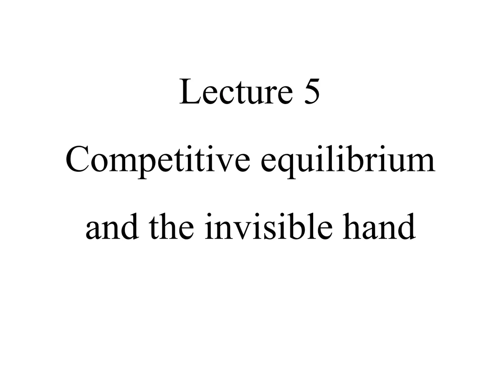
第 5 讲：竞争性均衡与看不见的手（Competitive equilibrium and the invisible hand）。
前四讲分开研究了两类人：买方怎样在预算约束下选最优，卖方怎样在成本约束下定产量。这一讲把两边放进同一个市场，问一个加总问题——所有人各自逐利、无人指挥时，结果会好还是坏？
答案是亚当·斯密两百多年前给出的那个词：看不见的手。本讲要把它从一个漂亮的修辞，变成一个能画图、能算数、也能被反驳的命题：均衡价格怎么定，社会总剩余为什么在均衡处最大，以及这个「最大」到底漏掉了什么。
三个关键词先记住：竞争性均衡、社会总剩余、帕累托效率。
幻灯片原文 / 板书
Lecture 5 Competitive equilibrium and the invisible hand
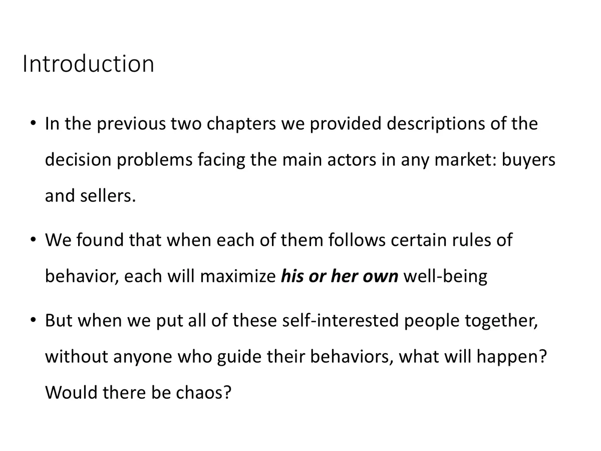
引子：把自利的人放在一起会怎样？
前三讲讲的是分散的决策问题：市场上两类主角——买方和卖方——各自面临什么选择、按什么规则行动。结论是：只要每个人按规则行事，他就能最大化自己的福利。
于是问题自然变成：把这些自利的人全部放进市场，又没有任何人指导他们的行为，会发生什么？会不会一团混乱？
注意这一问的措辞：不是「会不会有人骗人」，而是「没有指挥者，秩序从哪里来」。这是全讲的引擎，也是经济学作为一门社会科学最核心的问题。
幻灯片原文 / 板书
Introduction --- In the previous two chapters we provided descriptions of the decision problems facing the main actors in any market: buyers and sellers. We found that when each of them follows certain rules of behavior, each will maximize his or her own well-being But when we put all of these self-interested people together, without anyone who guide their behaviors, what will happen? Would there be chaos?
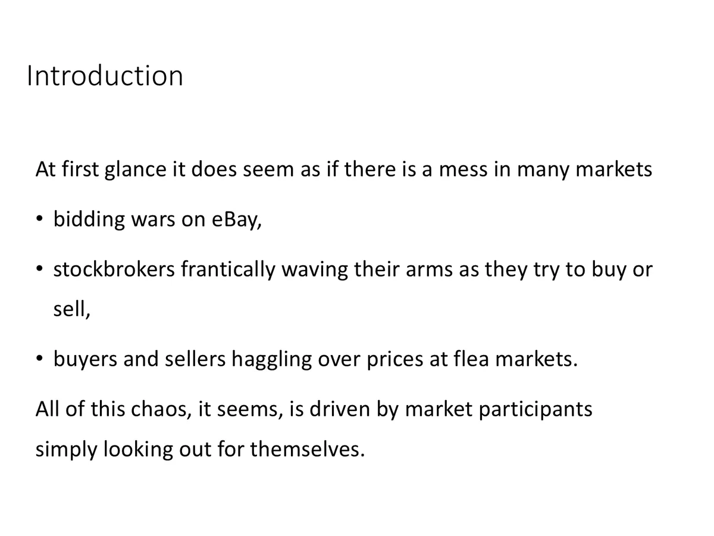
第一印象确实是混乱。
课件给了三个画面：eBay 上买家在最后十秒互相抬价；股票交易所里经纪人挥着手臂大喊大叫；跳蚤市场上买卖双方为一点价钱来回还价。
看起来乱，而且乱的根源恰恰是每个人都在打自己的算盘。这也是大多数人对市场的直觉：自利等于无序，所以需要有人来管。
但请先记住这个直觉，因为下面斯密要反驳的正是它。顺便说一句：这三处「乱」其实都是价格发现的过程——吵闹本身就是信息在传递。
幻灯片原文 / 板书
Introduction --- At first glance it does seem as if there is a mess in many markets bidding wars on eBay, stockbrokers frantically waving their arms as they try to buy or sell, buyers and sellers haggling over prices at flea markets. All of this chaos, it seems, is driven by market participants simply looking out for themselves.
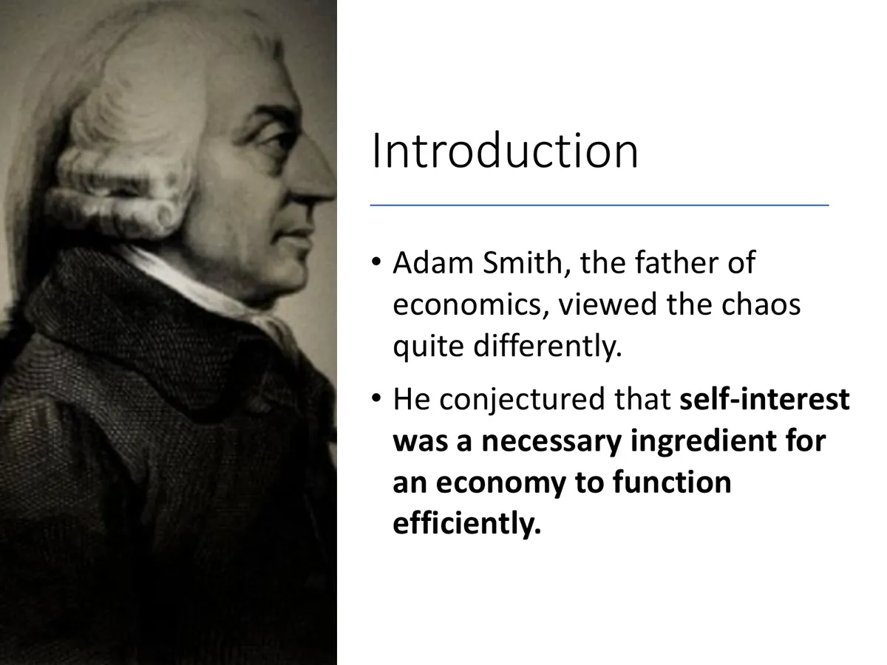
斯密看到的不是混乱，是另一种秩序。
亚当·斯密（Adam Smith）被称为经济学之父。面对同样的讨价还价，他的判断相反：自利不是效率的敌人，而是效率的必要原料（a necessary ingredient）。
注意「原料」这个比喻：原料本身不好吃，但没有它就做不出菜。斯密要论证的正是这件事——把自利的人放进合适的制度里，会长出秩序。
还要注意他说的不是「自利是好的」。他谈的是动机与结果的分离：动机可以很自私，结果可以很社会。
幻灯片原文 / 板书
Introduction --- Adam Smith, the father of economics, viewed the chaos quite differently. He conjectured that self-interest was a necessary ingredient for an economy to function efficiently.
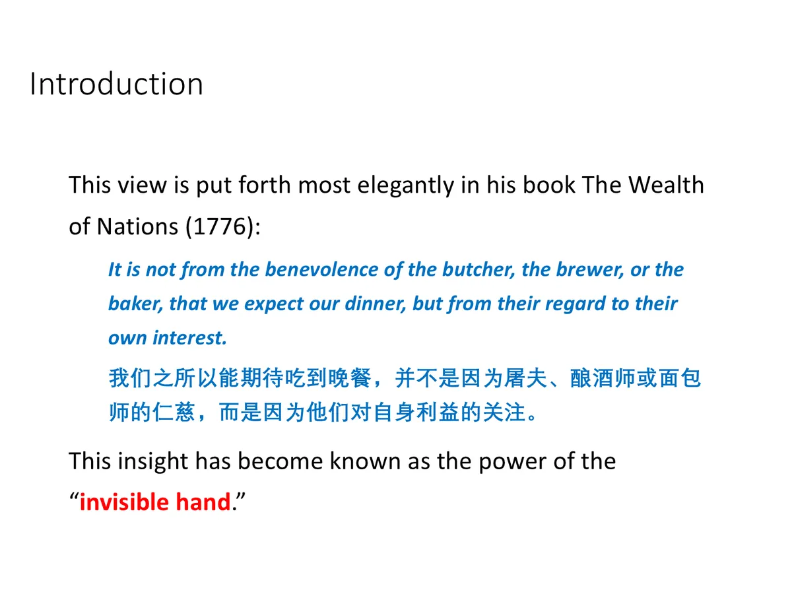
《国富论》（The Wealth of Nations, 1776）里最著名的一段：
我们能吃上晚饭，不是出于屠夫、酿酒师、面包师的仁慈，而是出于他们对自身利益的关注。
（It is not from the benevolence of the butcher, the brewer, or the baker, that we expect our dinner, but from their regard to their own interest.）
这句话的分量在于：它把「别人对你好」从经济解释里删掉了。你不需要屠夫爱你，只需要他爱你付的钱。注意原文用的是 expect（期待）而不是 guarantee（保证）——制度坏了，自利同样可以变成掠夺。这句话后来被概括为看不见的手的力量。
幻灯片原文 / 板书
Introduction --- This view is put forth most elegantly in his book The Wealth of Nations (1776): It is not from the benevolence of the butcher, the brewer, or the baker, that we expect our dinner, but from their regard to their own interest. 我们之所以能期待吃到晚餐，并不是因为屠夫、酿酒师或面包师的仁慈，而是因为他们对自身利益的关注。 This insight has become known as the power of the “invisible hand.”
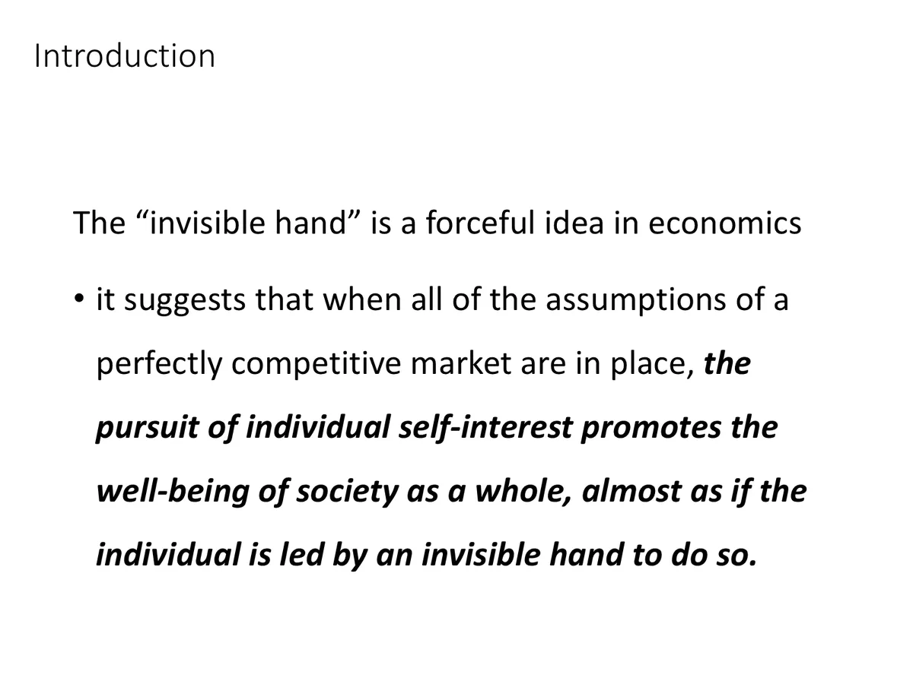
看不见的手的完整表述。
课件给的定义有两个部分，读的时候不要漏：
- 前提：一个完全竞争市场（perfectly competitive market）的所有假设都成立；
- 结论：每个人追求自身利益，会促进整个社会的福利，就好像有一只看不见的手在引导他这样做。
「所有假设」包括：人人都是价格接受者、产品同质、信息完全、没有外部性、可以自由进入退出。这门课后面所有「市场是好的」结论，都挂在这张清单上；清单一旦破掉（垄断、外部性、信息不对称），结论就要重写。本讲先把前提成立时的结论做实。
幻灯片原文 / 板书
The “invisible hand” is a forceful idea in economics it suggests that when all of the assumptions of a perfectly competitive market are in place, the pursuit of individual self-interest promotes the well-being of society as a whole, almost as if the individual is led by an invisible hand to do so. --- Introduction
下面用一个例子把它做实。
过渡页：An illustration。
我们要造一个极小的市场——7 个买方、7 个卖方、一种商品。小到可以一个个数人头、一笔笔算钱。
为什么要这么小？因为只有小到能对上账，「社会总剩余最大」才不再是一句口号，而是一个能被逐笔核对的数字。真实市场有几千万人，但道理完全一样，只是把加法换成了积分。
幻灯片原文 / 板书
An illustration
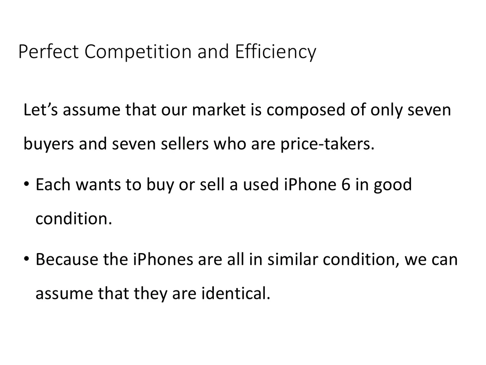
市场设定。
- 只有 7 个买方和 7 个卖方，每个人都是价格接受者（price-taker）：只能接受市场价，不能单独影响它。
- 商品是二手的 iPhone 6，成色良好。因为成色相近，我们假设它们完全同质。
同质这个假设很关键：它把「价值差异」全部归到人身上，而不是归到货身上。于是剩下的唯一变量就是每个人心里的那个价格。
「价格接受者」也一样重要：如果谁能定价，他就不会让价格停在均衡上，后面的结论全要改。
幻灯片原文 / 板书
Perfect Competition and Efficiency --- Let’s assume that our market is composed of only seven buyers and seven sellers who are price-takers. Each wants to buy or sell a used iPhone 6 in good condition. Because the iPhones are all in similar condition, we can assume that they are identical.
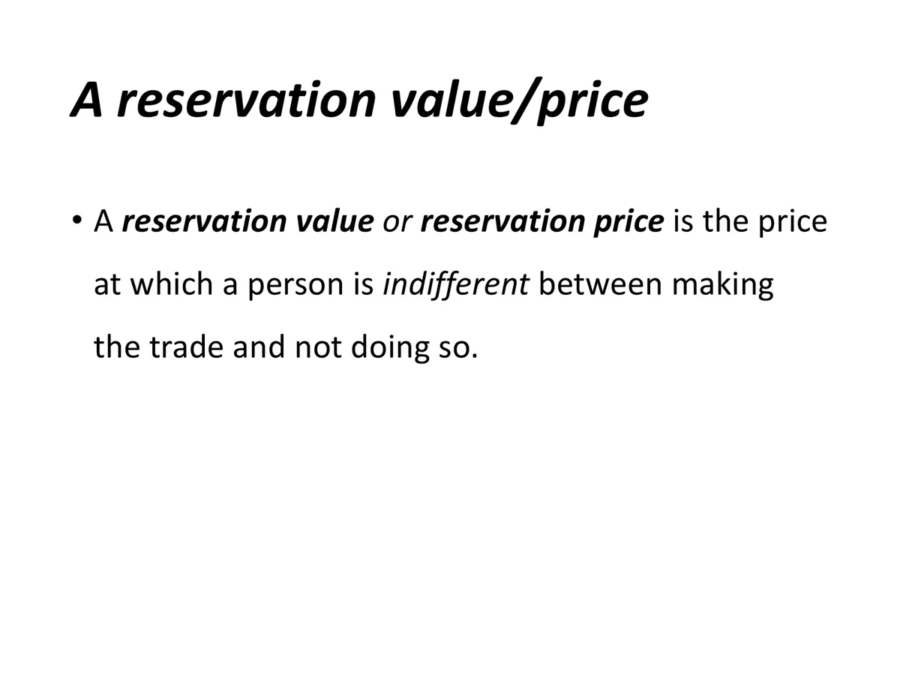
保留价值（reservation value / reservation price）：一个人对「成交」与「不成交」正好无差异的那个价格。
这句话要按字面读：
- 对买方，它是最高愿意支付的价格，即支付意愿（willingness to pay, WTP）。价格再高一分，他就不买。
- 对卖方，它是最低愿意接受的价格，即接受意愿（willingness to accept, WTA）。价格再低一分，他就不卖。
「无差异」是精确的：在这个价格上，做与不做对他一样好。常见错解是把保留价值当成市场价或会计成本——它其实是机会成本的主观版本，是心里的那条线。
幻灯片原文 / 板书
A reservation value/price --- A reservation value or reservation price is the price at which a person is indifferent between making the trade and not doing so.
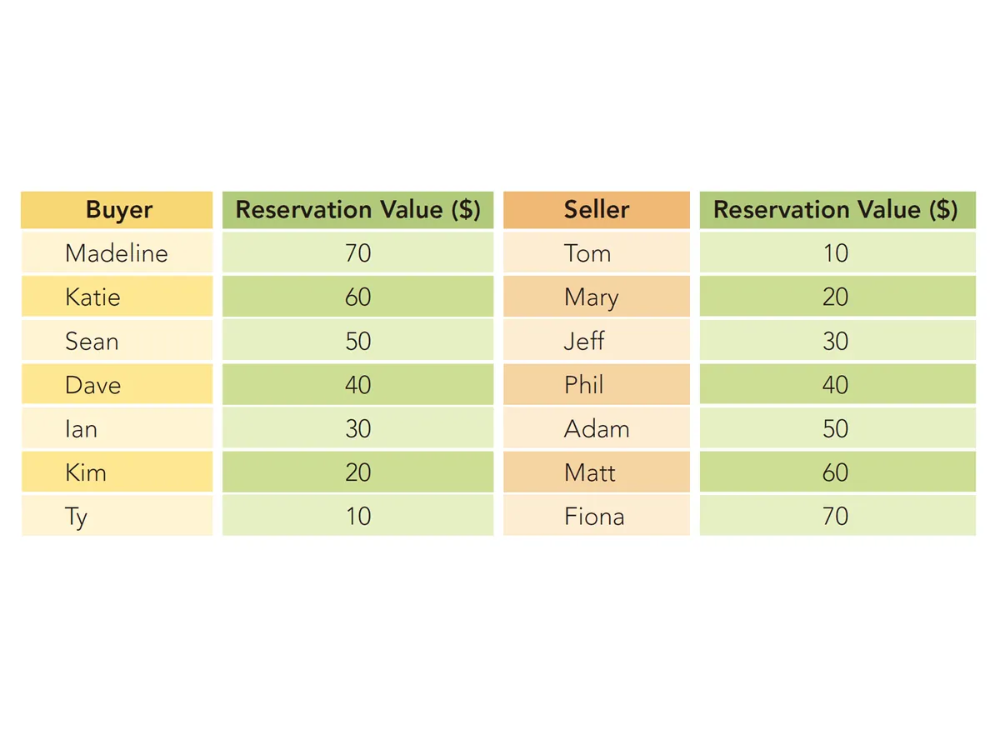
七买七卖的保留价值表。
| 买方 | 保留价值（美元） | 卖方 | 保留价值（美元） |
|---|---|---|---|
| Madeline | 70 | Tom | 10 |
| Katie | 60 | Mary | 20 |
| Sean | 50 | Jeff | 30 |
| Dave | 40 | Phil | 40 |
| Ian | 30 | Adam | 50 |
| Kim | 20 | Matt | 60 |
| Ty | 10 | Fiona | 70 |
怎么读：买方那列从上到下递减，卖方那列从上到下递增，两列都按 10 美元一档排好。这不是巧合，是教材刻意设计——每档刚好差 10，后面算剩余口算就行。
另外注意：表里没有「成本」列。对卖方，保留价值就是他的成本；对买方，保留价值就是他不买时那笔钱的用途。
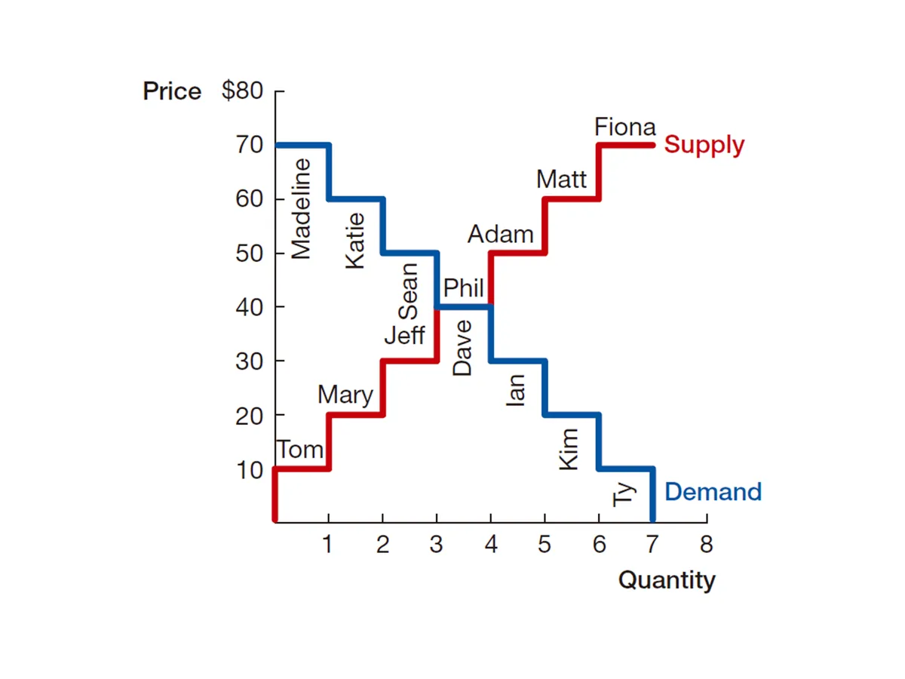

均衡价格是 40 美元。
两件事同时发生：在这个价位上，有 4 个买方愿意付至少 40（Madeline、Katie、Sean、Dave），有 4 个卖方要价不超过 40（Tom、Mary、Jeff、Phil）。供给与需求恰好在这条水平线上相遇。
注意 40 这个数不是谁定的：它是唯一一个「想买的人数和想卖的人数相等」的价格。高于 40，卖方多买方少，有人降价；低于 40，买方多卖方少，有人抬价。
有趣的是，40 正好等于 Dave 的 WTP，也正好等于 Phil 的 WTA——边际上那两个人对成交完全无差异。

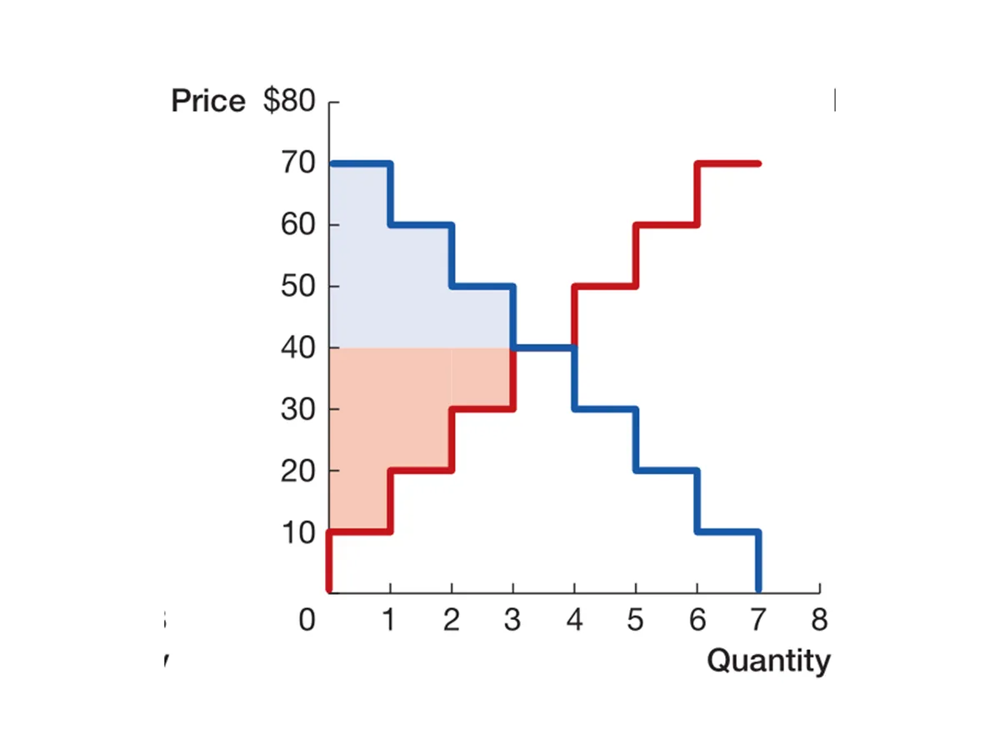
把剩余涂在图上。
- 蓝色区域是消费者剩余（consumer surplus），每个成交买方「愿意付的减实际付的」：(70-40)+(60-40)+(50-40)+(40-40)=30+20+10+0=60。
- 红色区域是生产者剩余（producer surplus），每个成交卖方「实际收的减最低要的」：(40-10)+(40-20)+(40-30)+(40-40)=30+20+10+0=60。
两边各 60，加起来 120，就是这个市场创造出来的总价值。
看图时注意：消费者剩余夹在需求曲线与价格线之间，生产者剩余夹在价格线与供给曲线之间。谁在上面谁在下面，别画反。
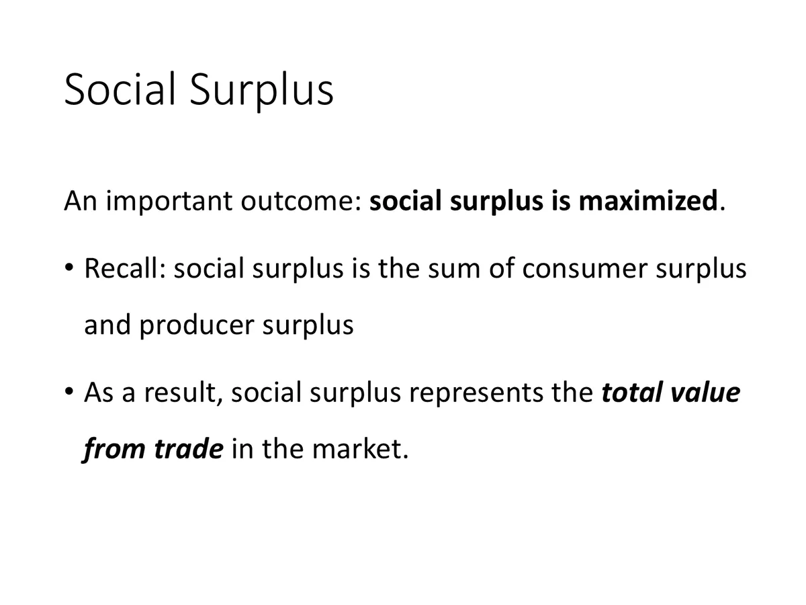
社会总剩余（social surplus）。
定义很干脆：社会总剩余 = 消费者剩余 + 生产者剩余。它衡量的是市场交易创造的总价值，用货币单位表示。
注意它衡量的是「总量」，不是「分配」。120 这个数字不告诉你 Madeline 拿多少、Tom 拿多少，只告诉你这 4 笔交易一共让世界变富了多少。
这就是为什么后面讲公平时要另起一套标准：一个总剩余 120、全归卖方的市场，和一个总剩余 100、两边各半的市场，前者更「有效率」，后者可能更「公道」。
幻灯片原文 / 板书
Social Surplus --- An important outcome: social surplus is maximized. Recall: social surplus is the sum of consumer surplus and producer surplus As a result, social surplus represents the total value from trade in the market.
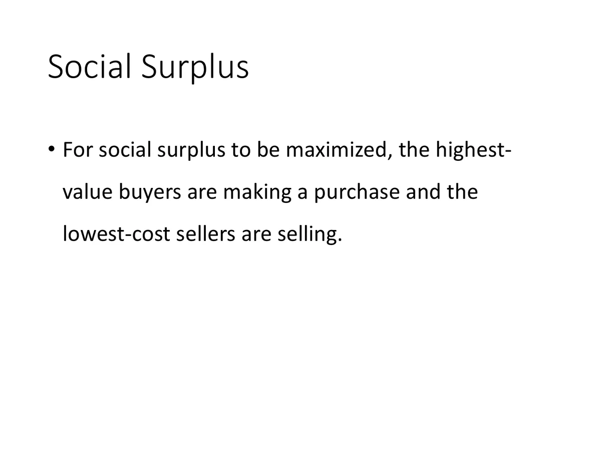
总剩余最大的条件。
要让社会总剩余最大，必须同时做到两件事：
- 估值最高的买方买到（highest-value buyers are making a purchase）；
- 成本最低的卖方卖出（lowest-cost sellers are selling）。
道理很直白：一单位商品如果从「愿意付 30 的人」转到「愿意付 70 的人」手里，价值多了 40；如果从「成本 50 的人」转到「成本 10 的人」手里，成本少了 40。任何一次这样的重新配对都能增加总剩余，直到再也找不到为止。
注意这里的「最高价值」是支付意愿，不是「最有钱」，也不是「最需要」。
幻灯片原文 / 板书
Social Surplus --- For social surplus to be maximized, the highest-value buyers are making a purchase and the lowest-cost sellers are selling.
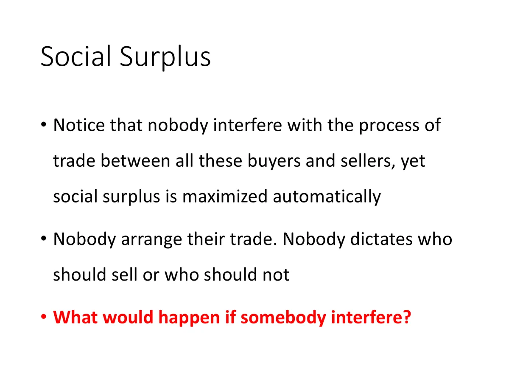
注意这里没有指挥者。
没有人安排谁跟谁交易，没有人规定谁该卖谁不该卖，但社会总剩余自动达到最大。这正是第 6 页那句话的具体版本。
于是自然的追问是：如果有人偏要插手呢？
接下来两页做一个思想实验——用行政命令改变成交数量，看总剩余怎么变。这是全讲第一个反事实（counterfactual）：不问「现实是什么」，而问「如果换个做法会怎样」。经济学的大部分结论都是这样问出来的。
幻灯片原文 / 板书
Social Surplus --- Notice that nobody interfere with the process of trade between all these buyers and sellers, yet social surplus is maximized automatically Nobody arrange their trade. Nobody dictates who should sell or who should not What would happen if somebody interfere?
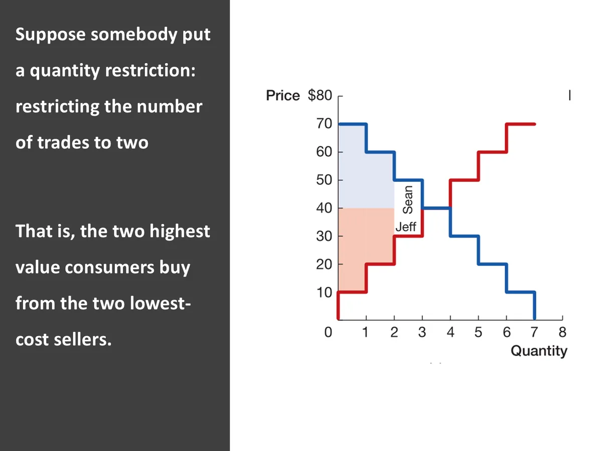
实验一：只允许 2 笔交易。
假设有人下了一道数量管制（quantity restriction），把成交数压到 2 笔。即便是这样，人们也会挑最好的配对：估值最高的两个买方（Madeline 70、Katie 60）从成本最低的两个卖方（Tom 10、Mary 20）手里买。
这时消费者剩余 =30+20=50，生产者剩余 =30+20=50，总剩余 100，比 120 少了 20。
图上被砍掉的那两块阶梯（Sean 与 Jeff、Dave 与 Phil 之间），就是蒸发掉的价值。注意这 20 没有转移给任何人，它是凭空消失的。
幻灯片原文 / 板书
Suppose somebody put a quantity restriction: restricting the number of trades to two That is, the two highest value consumers buy from the two lowest-cost sellers.
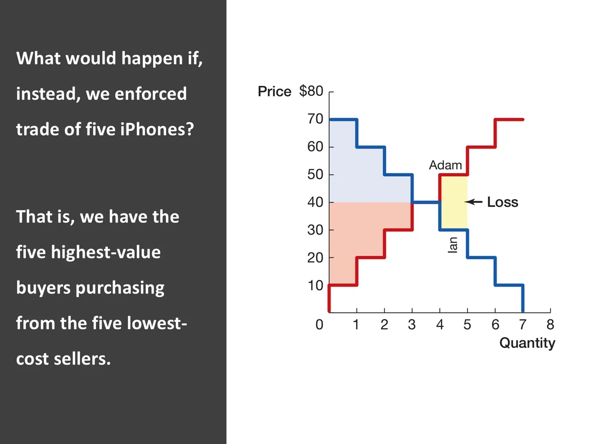
实验二：强制成交 5 笔。
反方向做一次：让估值最高的五个买方（70、60、50、40、30）从成本最低的五个卖方（10、20、30、40、50）手里买。
总价值是 70+60+50+40+30=250，总成本是 10+20+30+40+50=150，总剩余 100，又是少 20。
原因在第五笔：Ian 只愿意付 30，Adam 却要 50，这一笔本身就毁灭 20 的价值。所以「交易越多越好」是错的。
对比两个实验：Q=2 是漏掉了好交易，Q=5 是做了坏交易；损失都是 20，机制却不相同。记住这个对称：效率损失可以来自「太少」，也可以来自「太多」，而两者在图上都表现为台阶的缺口。
幻灯片原文 / 板书
What would happen if, instead, we enforced trade of five iPhones? That is, we have the five highest-value buyers purchasing from the five lowest-cost sellers.
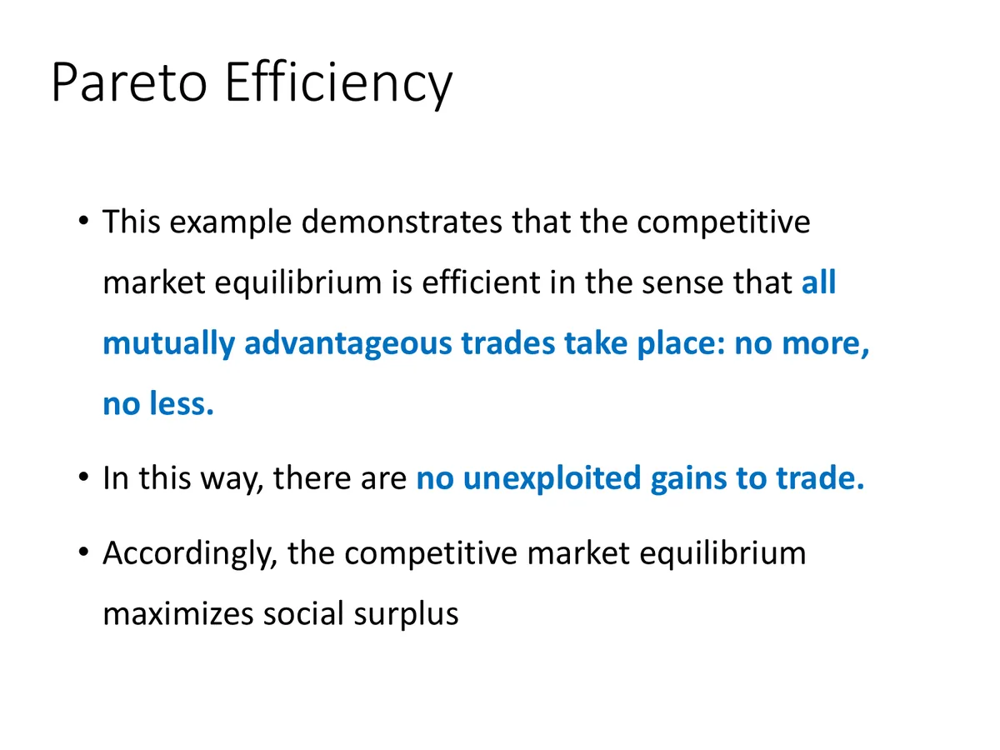
竞争性均衡的效率，第一次定义。
这个例子说明：竞争性市场均衡让所有互利的交易都发生——不多，也不少（all mutually advantageous trades take place: no more, no less）。
由此得到两个说法，意思一样：
- 不存在未被利用的交易收益（no unexploited gains to trade）；
- 因此竞争性均衡使社会总剩余最大。
「不多不少」这四个字是本讲的骨架。判断一个市场有没有效率，就看还有没有「一方愿意多付、另一方愿意少收」却没能成交的配对。
幻灯片原文 / 板书
Pareto Efficiency --- This example demonstrates that the competitive market equilibrium is efficient in the sense that all mutually advantageous trades take place: no more, no less. In this way, there are no unexploited gains to trade. Accordingly, the competitive market equilibrium maximizes social surplus
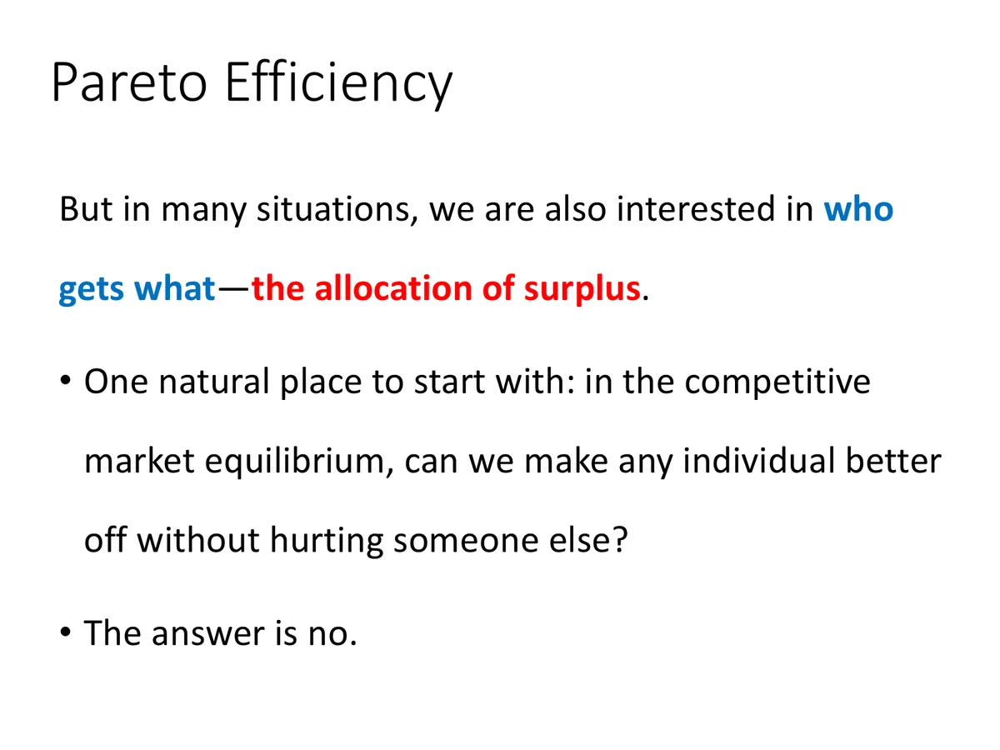
但「总剩余最大」没回答「谁拿了多少」。
很多时候我们关心的不只是饼有多大，还有剩余的分配（the allocation of surplus）——同样 120，全归买方和全归卖方，是两种完全不同的世界。
一个自然的起点是问：在竞争性均衡里，能不能让某个人变得更好，同时不伤害任何别人？
答案是不能。这句话就是帕累托效率的口语版：好到不能再好，除非有人受损。
幻灯片原文 / 板书
Pareto Efficiency --- But in many situations, we are also interested in who gets what—the allocation of surplus. One natural place to start with: in the competitive market equilibrium, can we make any individual better off without hurting someone else? The answer is no.
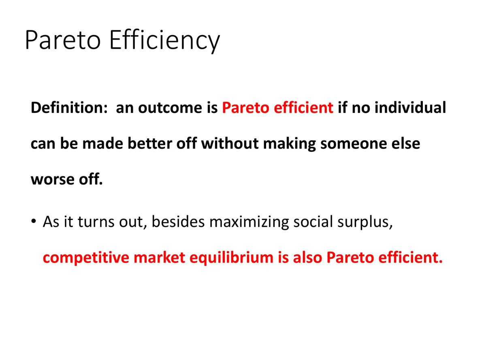
帕累托效率（Pareto efficiency）的定义。
一个结果如果不存在「让某人更好而不让任何人更差」的改动，它就是帕累托有效的。
（an outcome is Pareto efficient if no individual can be made better off without making someone else worse off.）
课件接着补一句：竞争性市场均衡除了让总剩余最大，也是帕累托有效的。这里两者是一回事，因为有外部性时它们会分家，第 1 讲埋过伏笔。
三个常见错解要避开：帕累托有效不等于公平；不等于唯一（很多种分配都有效）；也不等于「没人想改」。
幻灯片原文 / 板书
Pareto Efficiency --- Definition: an outcome is Pareto efficient if no individual can be made better off without making someone else worse off. As it turns out, besides maximizing social surplus, competitive market equilibrium is also Pareto efficient.
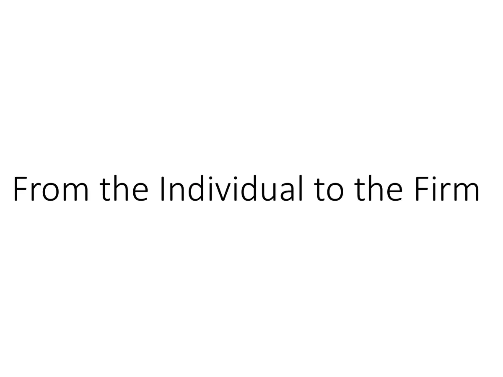
换场景：从个人到企业（From the Individual to the Firm）。
前面讲的是人与人之间的交易。现在问一个更细的问题：看不见的手能不能管到企业内部——一家公司有两个车间，该把产量放在哪个车间？
如果连这种「内部调度」都能被市场价格自动做对，那只手的力量就比我们想的强得多。这一节是全讲最漂亮的一段推理。注意这个问题已经不属于「消费者选择」，而是生产组织：同样的总产量，该怎么分给两个厂。
幻灯片原文 / 板书
From the Individual to the Firm
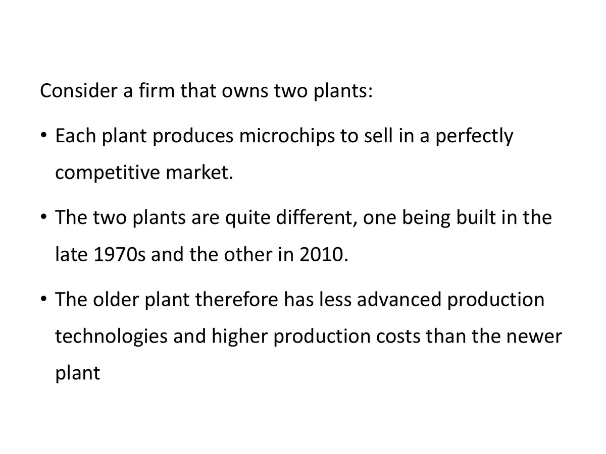
设定：一家公司，两个工厂。
- 两个厂都生产微芯片（microchips），拿到完全竞争市场上卖，所以公司是价格接受者。
- 两个厂差别很大：老厂建于 1970 年代末，新厂建于 2010 年。
- 老厂技术落后，生产成本更高。
先把「技术落后」翻译成图形语言：老厂的边际成本曲线整体在新厂上方。
注意「价格接受者」这个前提在这里的作用：两个厂面对同一个 P，才有可比性；否则比较边际成本就没有意义。
幻灯片原文 / 板书
Consider a firm that owns two plants: Each plant produces microchips to sell in a perfectly competitive market. The two plants are quite different, one being built in the late 1970s and the other in 2010. The older plant therefore has less advanced production technologies and higher production costs than the newer plant
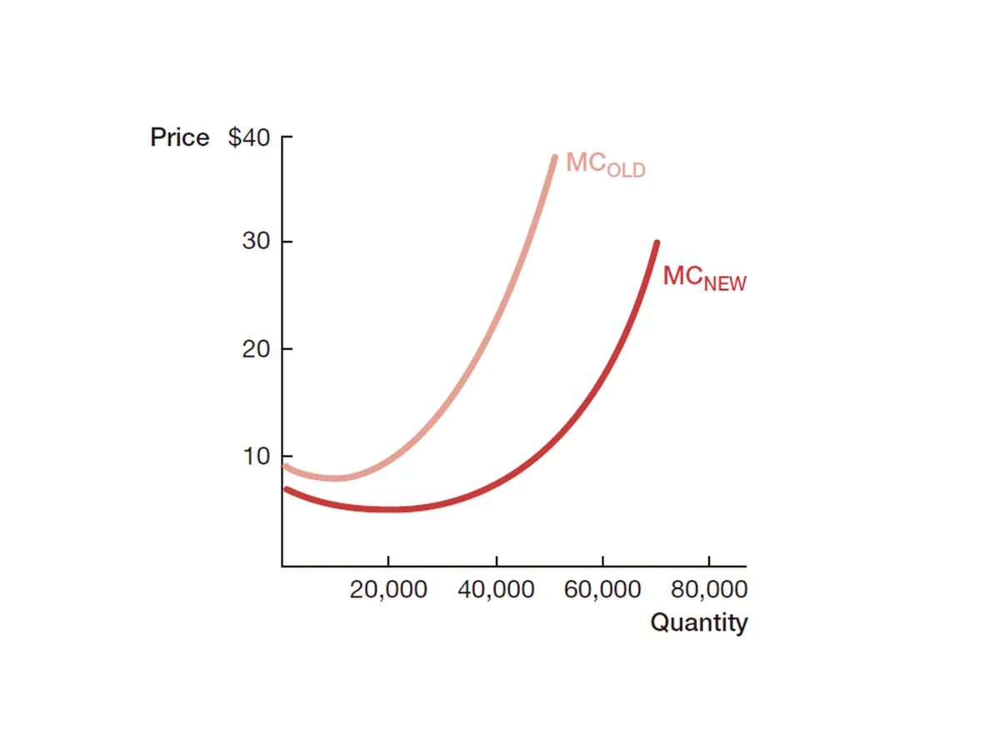
两条边际成本曲线。
横轴是产量（0 到 80,000 颗），纵轴是价格（0 到 40 美元）。浅红色是 MC_OLD，深红色是 MC_NEW，前者整体在后者上方，而且上升得更快。
读图要点：对同一条水平价格线，它与 MC_OLD 的交点更靠左，与 MC_NEW 的交点更靠右。也就是说，同样的价格下，老厂愿意生产的量更少。
老厂曲线的最低点也更高——它的启动成本就更贵。这两个特征决定了后面所有算术。
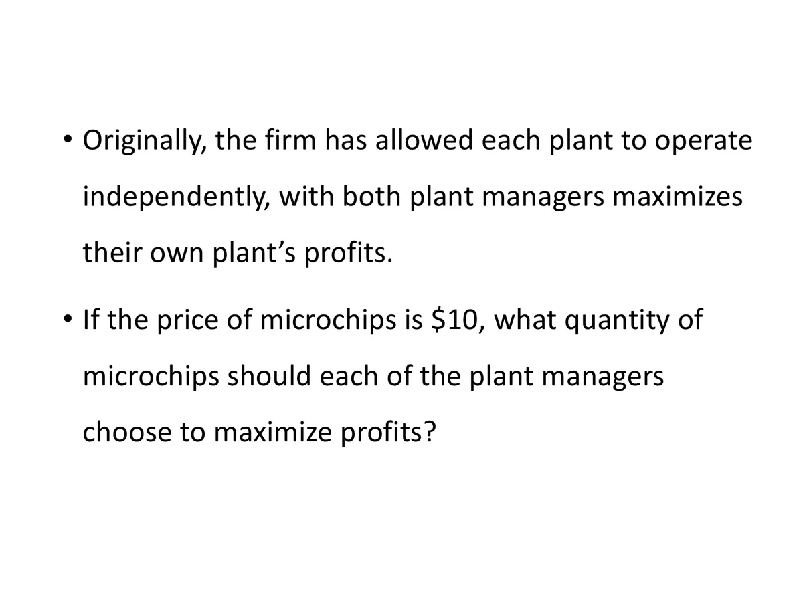
原来的做法：两个厂各自为政。
公司原本让每个厂独立核算，两个厂长各自最大化自己厂的利润。芯片价格是 10 美元。
问题：如果你是厂长，产量该定在多少？规则上一讲就学过——扩张到边际成本等于价格为止，即 MC=P，因为完全竞争下 P=MR。
所以老厂做到 MC_OLD=10，新厂做到 MC_NEW=10。注意两个人谁也没跟谁商量，他们甚至不需要知道另一个厂存在。
幻灯片原文 / 板书
Originally, the firm has allowed each plant to operate independently, with both plant managers maximizes their own plant’s profits. If the price of microchips is $10, what quantity of microchips should each of the plant managers choose to maximize profits?
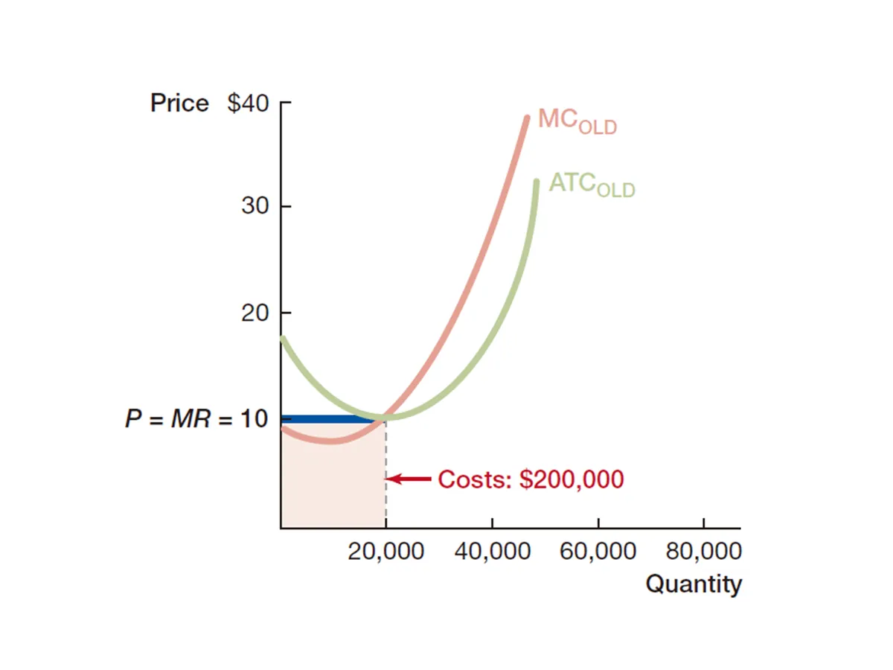
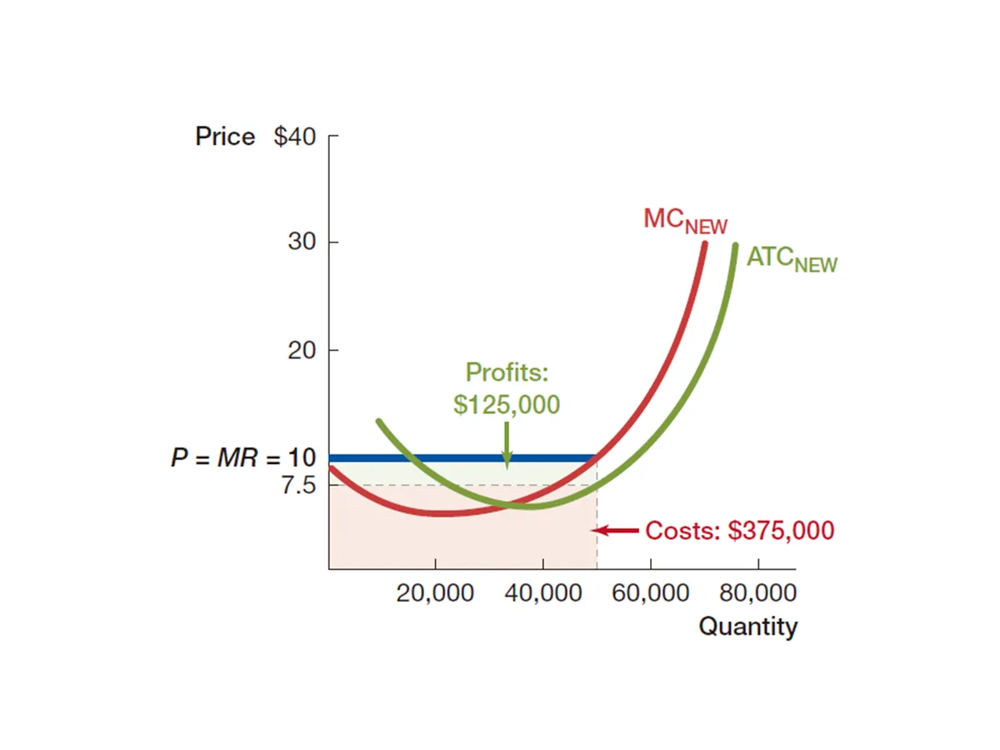
新厂的账。
同样是 P=10，但 MC_NEW 更低更平，交点落在 50,000 颗。总成本 $375,000，收益 10×50,000=500,000，利润 125,000。
把两个厂加起来：产量 20,000+50,000=70,000 颗，总利润 0+125,000=125,000。
这就是「各自为政」的结果。请把 70,000 和 125,000 这两个数记住，下一页有人要来改它们。这两个数字不是随便凑出来的，它们是「每颗都按 10 美元做决定」算出的总和。另外注意新厂曲线在低产量处的单位成本也不低，是规模把它摊薄的；摊到 50,000 颗之后，边际成本才开始咬人。
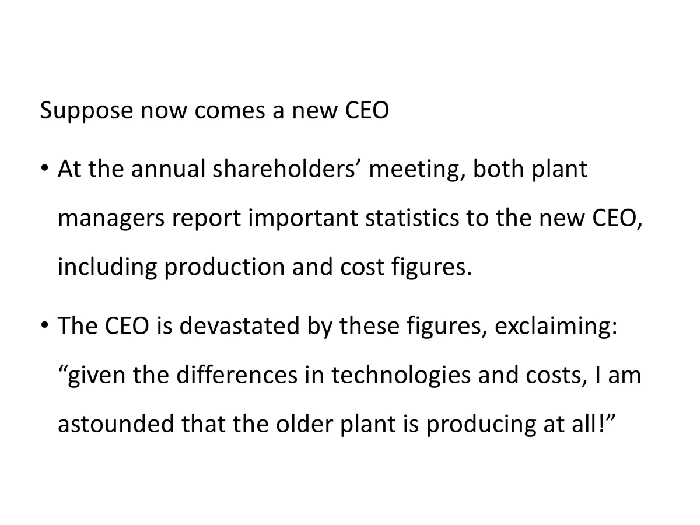
新 CEO 上任。
年度股东大会上，两个厂长汇报产量与成本数据。新 CEO 看完「大为震惊」，脱口而出：
考虑到技术和成本的差距，老厂居然还在生产，这让我难以置信！
这句话听起来很专业，其实犯了一个典型错误：他看的是技术水平和平均成本，而决定产量该放哪里的，是边际成本。
技术更好只说明「平均而言更便宜」，不说明「多生产一颗更便宜」。这是本章最重要的一次概念分野。
幻灯片原文 / 板书
Suppose now comes a new CEO At the annual shareholders’ meeting, both plant managers report important statistics to the new CEO, including production and cost figures. The CEO is devastated by these figures, exclaiming: “given the differences in technologies and costs, I am astounded that the older plant is producing at all!”
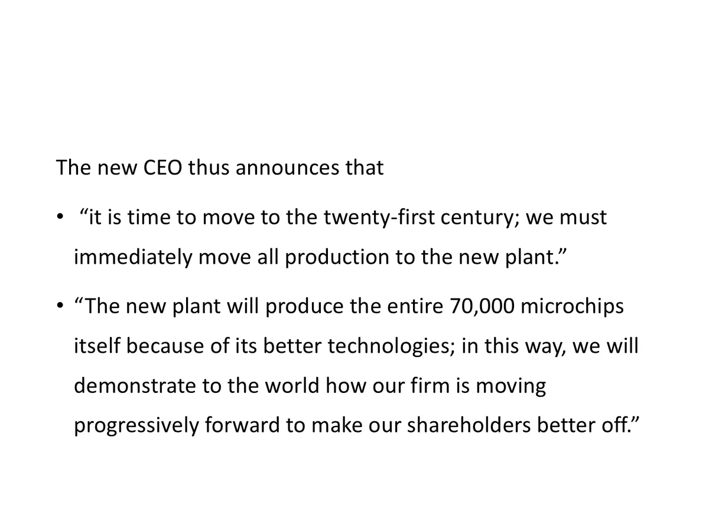
CEO 的方案。
他宣布：该进入 21 世纪了，必须立刻把所有生产转移到新厂；新厂将凭更好的技术独自生产全部 70,000 颗，以此向世界展示本公司如何进步、如何让股东更富。
注意这段话的结构：修辞很足，算术为零。他没有算过「第 70,000 颗芯片在新厂要花多少钱」，只比较了「新厂技术更好」。
现实里的管理决策经常这样出错：用一句正确的定性判断，去替代一道必须算的定量题。
幻灯片原文 / 板书
The new CEO thus announces that “it is time to move to the twenty-first century; we must immediately move all production to the new plant.” “The new plant will produce the entire 70,000 microchips itself because of its better technologies; in this way, we will demonstrate to the world how our firm is moving progressively forward to make our shareholders better off.”
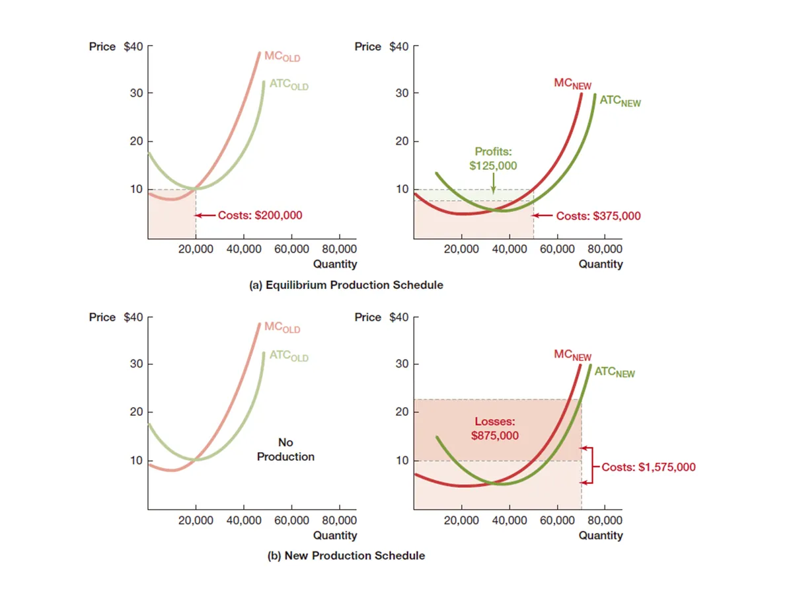
两种生产方案的对账。
- (a) 均衡的生产安排：老厂 20,000 颗，成本 $200,000（利润 0）；新厂 50,000 颗，成本 $375,000（利润 $125,000）。合计 70,000 颗，总利润 $125,000。
- (b) CEO 的安排：老厂停产，新厂 70,000 颗，成本 $1,575,000，收入 $700,000，亏损 $875,000。
两个方案相差 125,000-(-875,000)=1,000,000 美元。
一句话：新技术省下的钱，还不够填补多出来的那一百万。考点在这里：能说清这一百万具体落在哪一段产量上。读这对图的方法固定：彩色面积是总成本，P×Q 的矩形是收入，两者之差就是利润或亏损。
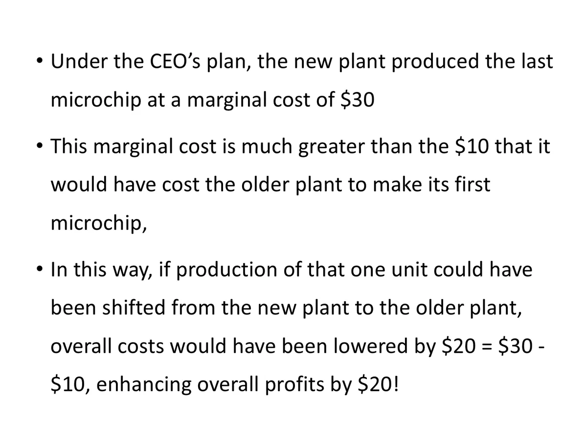
错在哪里？看边际。
在 CEO 的方案下，新厂生产最后一颗芯片的边际成本是 30 美元；而老厂生产第一颗芯片的边际成本只要 10 美元。
如果把这一颗从新厂挪到老厂，总成本就下降 30-10=20 美元，利润就增加 20 美元。这个操作可以一直做下去，直到没钱可赚。
考点：比较「谁更先进」是平均思维，比较「这一颗谁更便宜」是边际思维。所有产量决策看的都是后者。
幻灯片原文 / 板书
Under the CEO’s plan, the new plant produced the last microchip at a marginal cost of $30 This marginal cost is much greater than the $10 that it would have cost the older plant to make its first microchip, In this way, if production of that one unit could have been shifted from the new plant to the older plant, overall costs would have been lowered by $20 = $30 - $10, enhancing overall profits by $20!
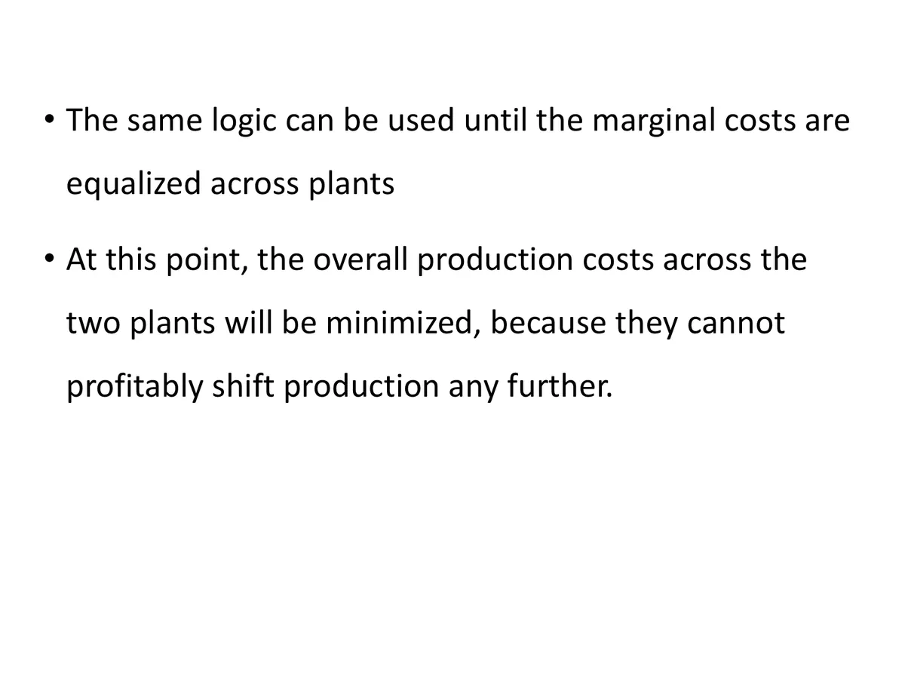
做到边际成本相等为止。
把上面那一步重复：只要两厂的边际成本不等，就总能把产量从高边际成本的一边挪到低边际成本的一边，降低成本。
一直挪到 MC_OLD=MC_NEW，此时总成本最小，因为再也找不到可以盈利的调整了。
这个条件叫等边际条件（equimarginal principle）：把总量分给几个使用者时，最优分配让各处的边际值相等。它不只用于工厂，也用于你的时间分配。
幻灯片原文 / 板书
The same logic can be used until the marginal costs are equalized across plants At this point, the overall production costs across the two plants will be minimized, because they cannot profitably shift production any further.
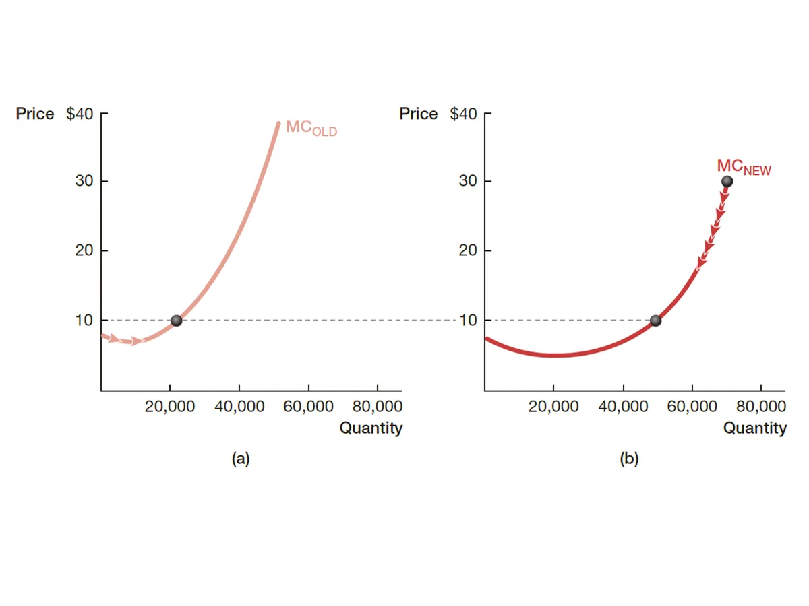
图上就是两个箭头。
- (a) 老厂：从 0 开始沿着 MC_OLD 往上走，产量增加到 20,000，边际成本升到 10。
- (b) 新厂：从 70,000 往下退，沿着 MC_NEW 把产量减到 50,000，边际成本从 30 降回 10。
两边同时调整，直到两个厂的边际成本相等，都落在 10 上。图上的两个黑点，就是最终停下的位置。
请留意箭头方向：老厂是「加」，新厂是「减」。这正是 CEO 方案的反向操作——他做反了，而且要退很远。两个箭头最后停在同一高度，那里才是总成本最小的地方。
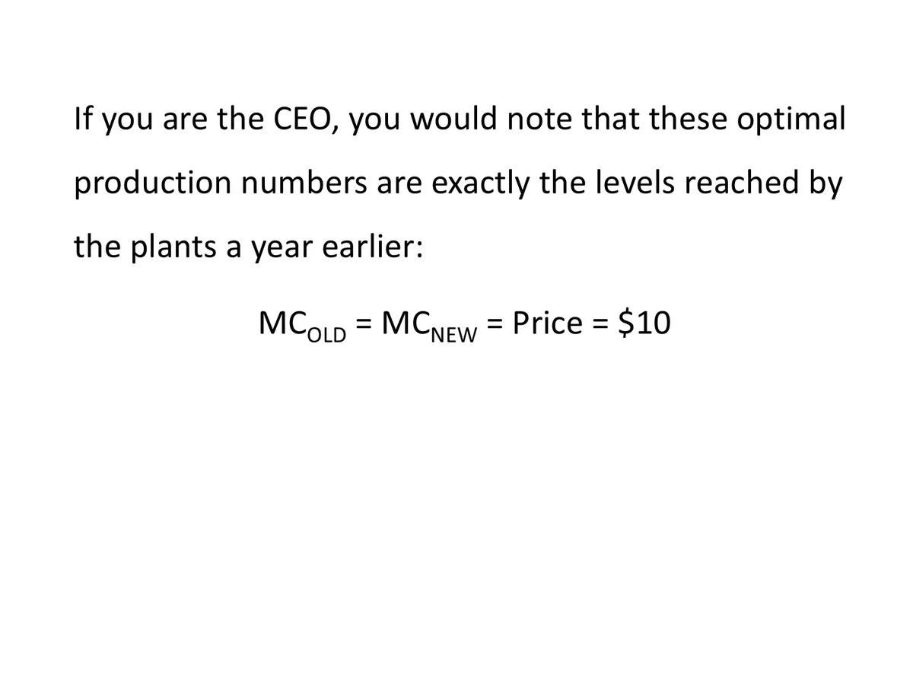
结果有点讽刺。
如果你是新 CEO，认真算完会发现：最优产量恰恰就是一年前两个厂长各自定下的水平——
MC_OLD = MC_NEW = Price = $10
三个等号要一起读：每个厂都令自己的边际成本等于同一个市场价格，正因为它们面对同一个 P，它们的 MC 就被自动拉平了。
厂长们不需要知道对方的存在，也不需要看总报表。价格替他们完成了协调。
幻灯片原文 / 板书
If you are the CEO, you would note that these optimal production numbers are exactly the levels reached by the plants a year earlier: MCOLD = MCNEW = Price = $10
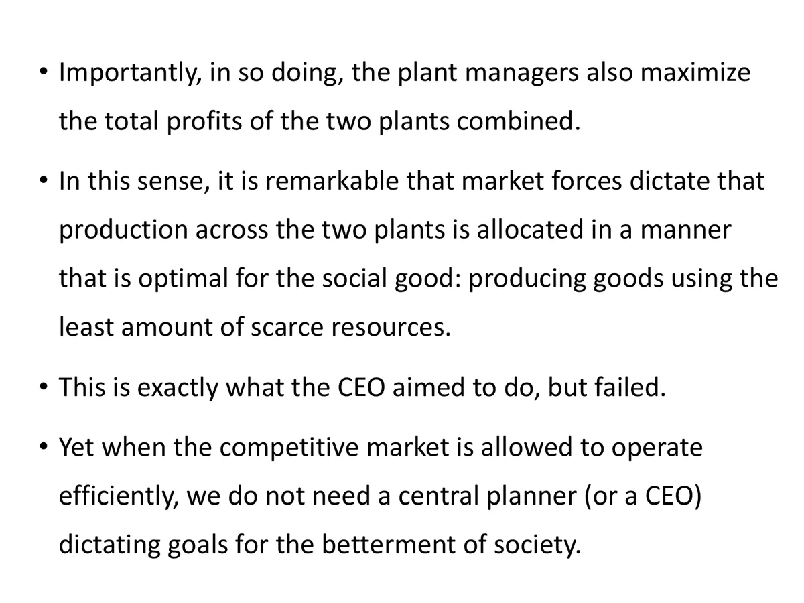
这就是「看不见的手」在企业内部的版本。
两个厂长只顾自己厂的利润，却同时最大化了两厂合计的利润。市场竞争把产量分配到了对社会最优的位置——用最少的稀缺资源生产。
CEO 想做的事，市场已经做了；CEO 亲手去做，反而亏了一百万。所以课件那句结论值得抄下来：当竞争性市场被允许有效运转时，我们不需要一个中央计划者（或 CEO）来为社会福利下命令。
这里是价格的第二个功能：在行业内有效率地配置生产。
幻灯片原文 / 板书
Importantly, in so doing, the plant managers also maximize the total profits of the two plants combined. In this sense, it is remarkable that market forces dictate that production across the two plants is allocated in a manner that is optimal for the social good: producing goods using the least amount of scarce resources. This is exactly what the CEO aimed to do, but failed. Yet when the competitive market is allowed to operate efficiently, we do not need a central planner (or a CEO) dictating goals for the betterment of society.
再换尺度：资源在行业之间的配置（Allocation of Resources Across Industries）。
刚才是一个行业内、两个厂之间的分配。现在把镜头拉远：整个经济有成千上万个行业，每个行业该生产多少？哪个行业生产得太多，哪个太少？
判断标准不能靠眼睛看，得找一个跨行业可比的信号。这个信号还是价格。
买方的行为我们已经懂了；要把市场的全貌拼完，还差卖方与价格如何互动这一块。
幻灯片原文 / 板书
Allocation of Resources Across Industries
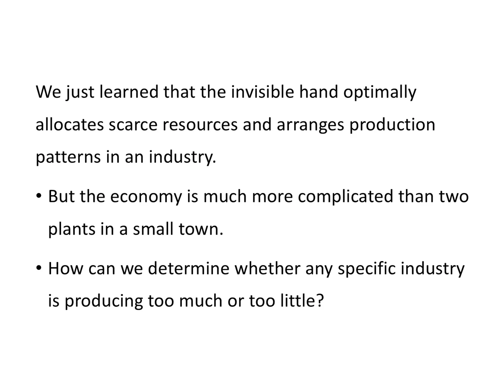
问题的提法。
我们已经知道：看不见的手能在一个行业内最优地配置稀缺资源、安排生产格局。
但真实经济比「小镇上的两个厂」复杂得多。于是问：怎么判断某一个具体行业是生产太多还是太少？
答案是把它和平均总成本（average total cost, ATC）比。这个比较会告诉我们，资源该进来还是该出去。
判据很简单：价格盖得住成本，资源就想进来；盖不住，资源就想走。
幻灯片原文 / 板书
We just learned that the invisible hand optimally allocates scarce resources and arranges production patterns in an industry. But the economy is much more complicated than two plants in a small town. How can we determine whether any specific industry is producing too much or too little?
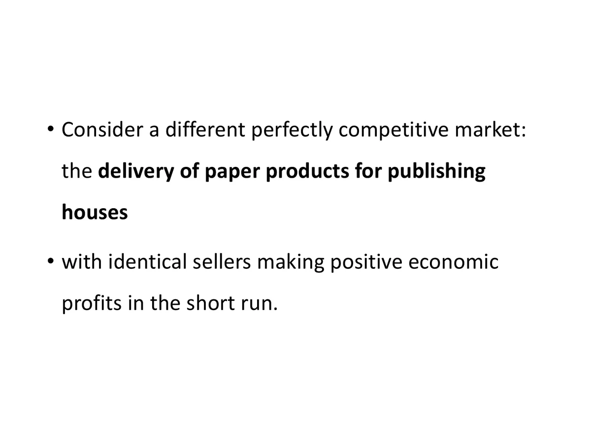
例子：为出版社送纸制品的运输市场。
设定：完全竞争，所有卖方完全相同（identical sellers），短期里存在正的经济利润（positive economic profits）。
为什么强调「完全相同」？因为只有这样，「一家企业的成本曲线」才能代表整个行业的技术，图形才画得出来。
为什么强调「短期」？因为短期里进入者还没来，利润才留得住。这三句话是后面所有结论的前提，缺一句都得不出「P 会降到 ATC 最低点」。
幻灯片原文 / 板书
Consider a different perfectly competitive market: the delivery of paper products for publishing houses with identical sellers making positive economic profits in the short run.
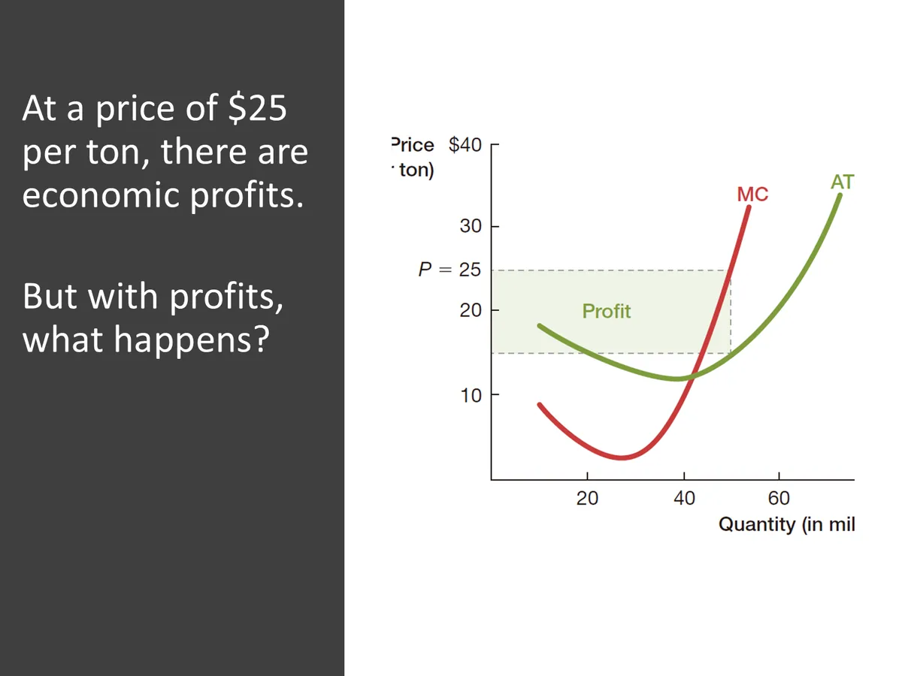
价格 25 美元/吨时的利润。
图：纵轴价格，横轴产量（百万单位）。红色 MC 向上倾斜，绿色 ATC 先降后升。价格线 P=25 与 MC 交在约 50 的位置，此时 ATC 只有 15 左右。
那块绿色矩形就是利润：(25-15)×50。企业按 MC=P 生产，赚到了正的经济利润。
问题来了：有利润，接下来会发生什么？ 在完全竞争里，利润不是终点，而是入口的招牌。另外看清利润矩形的高度：它是 P-ATC，不是 P-MC。会计看平均，决策看边际。
幻灯片原文 / 板书
At a price of $25 per ton, there are economic profits. But with profits, what happens?
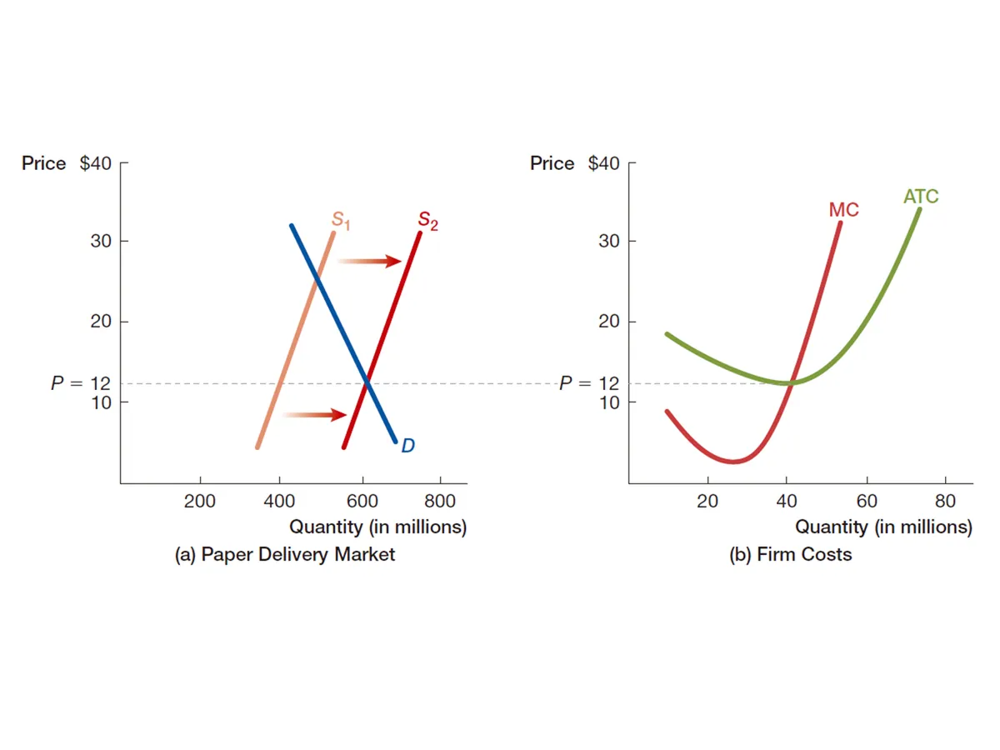
进入把价格压下来。
利润是信号弹。别的运输公司看到这个行业能赚钱，就会进来。每进来一家，市场供给就右移一点，价格就往下走一点，那块利润矩形就变薄一点。
图上价格线从 $25 一路下移，停在 $12——ATC 曲线的最低点。到这里利润矩形消失，进入才停下来。
整个过程没人下令、没人配额，只有一件事在驱动：别人也想要利润。
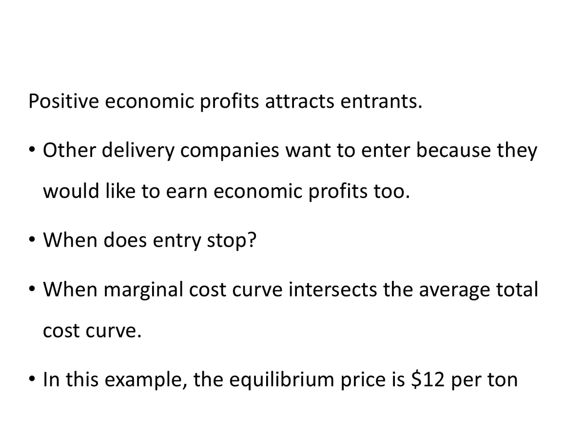
进入什么时候停？
正的经济利润吸引进入者（entrants）。其他运输公司想进来，因为它们也想要经济利润。
停止的条件：边际成本曲线与平均总成本曲线相交，也就是 ATC 的最低点。本例中，均衡价格是 12 美元/吨。
记住这个位置：MC 从下方穿过 ATC 的最低点，这是第 3 讲证明过的几何关系，不是巧合。这也是长期供给曲线在最低 ATC 处水平的原因——价格压不到成本以下，也涨不上去。
幻灯片原文 / 板书
Positive economic profits attracts entrants. Other delivery companies want to enter because they would like to earn economic profits too. When does entry stop? When marginal cost curve intersects the average total cost curve. In this example, the equilibrium price is $12 per ton
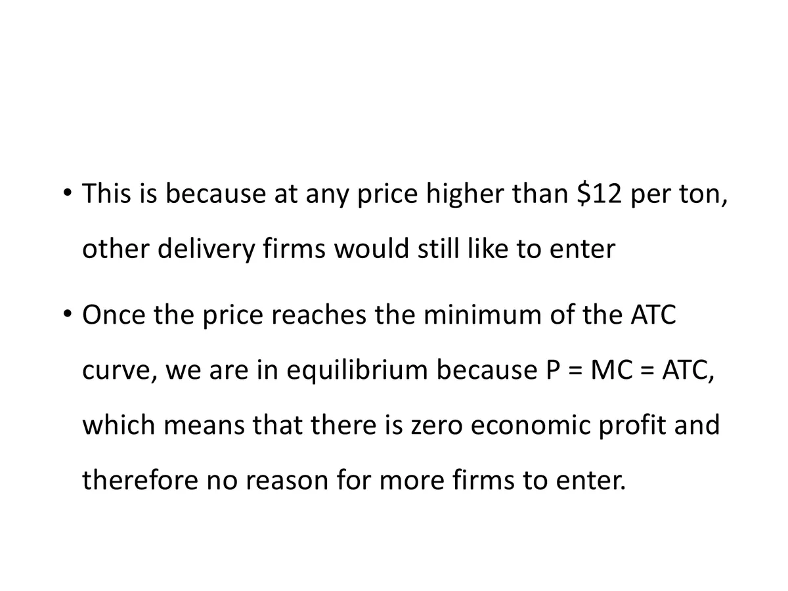
为什么是 12 而不是别的数？
只要价格高于 12，外面的企业就还想进来，供给继续右移，价格继续降。价格一旦落到 ATC 的最低点，就必有
P = MC = ATC
于是经济利润为零，再也没有进入的理由，市场停在这里。
这里容易错：零经济利润不等于会计上不赚钱。正常回报（normal profit）已经算进成本里，企业家该拿的一分没少。真正被竞争抹掉的，是超额部分。
幻灯片原文 / 板书
This is because at any price higher than $12 per ton, other delivery firms would still like to enter Once the price reaches the minimum of the ATC curve, we are in equilibrium because P = MC = ATC, which means that there is zero economic profit and therefore no reason for more firms to enter.
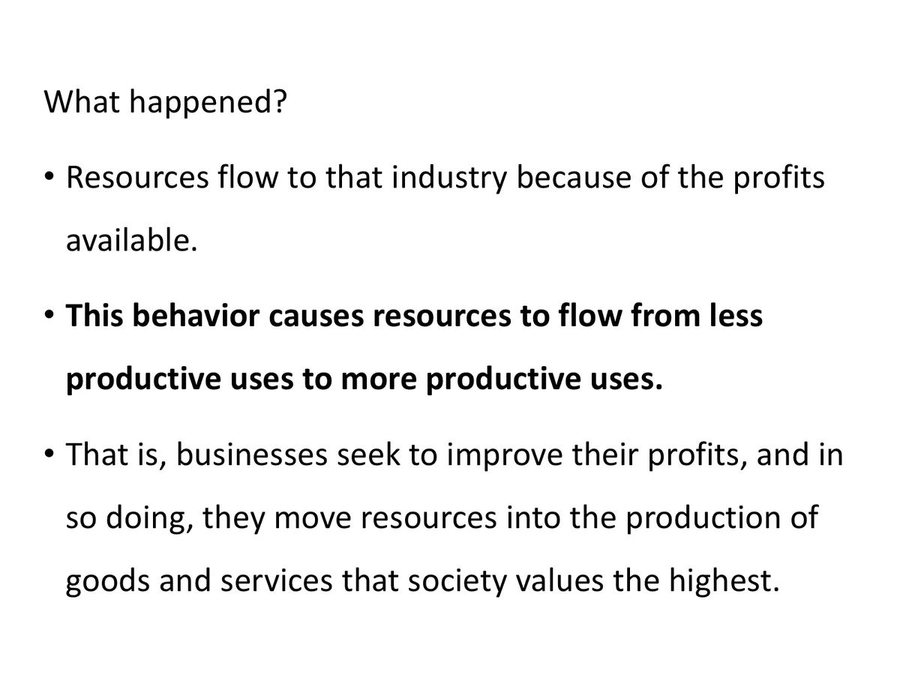
刚才到底发生了什么？
答案是：资源流动。
- 因为有利润，资源流向这个行业；
- 这使资源从生产率较低的用途流向生产率较高的用途；
- 企业只是为了提高自己的利润，但在这个过程中，它们把资源推进了社会估值最高的商品和服务的生产中。
注意最后半句：社会「估值」是用价格表达的，不是用谁的需要更迫切表达的。
这就是效率与慈善的区别：市场不问你有多需要，只问你愿意付多少。
幻灯片原文 / 板书
What happened? Resources flow to that industry because of the profits available. This behavior causes resources to flow from less productive uses to more productive uses. That is, businesses seek to improve their profits, and in so doing, they move resources into the production of goods and services that society values the highest.
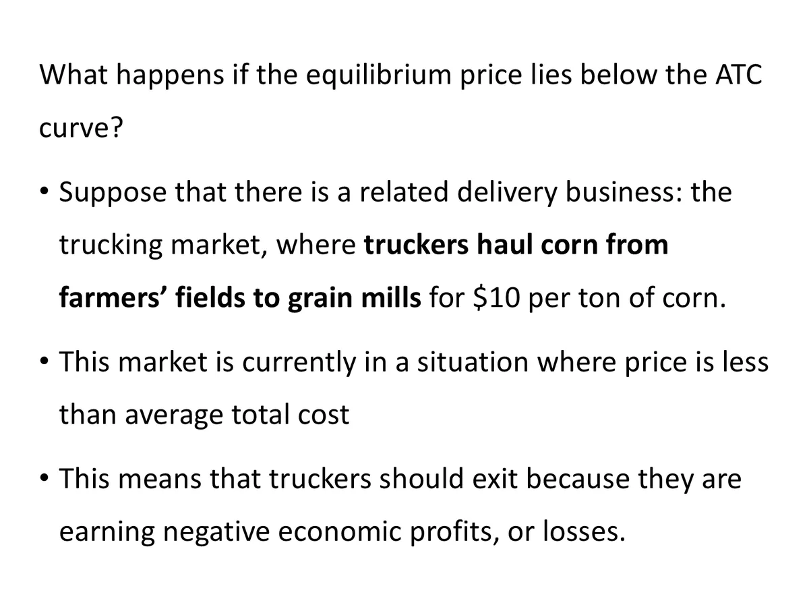
反过来的情形：价格低于 ATC。
课件换成卡车运输市场：卡车司机把玉米从农田运到磨坊，价格是 10 美元/吨。此时价格低于平均总成本。
含义很直接：经济利润为负，也就是亏损（losses）。按同一套逻辑，卡车司机应该退出这个行业。
注意这里不需要任何人判断「这个行业该不该存在」，亏损本身就是退出信号。同一个均衡条件，现在从反方向逼近。
幻灯片原文 / 板书
What happens if the equilibrium price lies below the ATC curve? Suppose that there is a related delivery business: the trucking market, where truckers haul corn from farmers’ fields to grain mills for $10 per ton of corn. This market is currently in a situation where price is less than average total cost This means that truckers should exit because they are earning negative economic profits, or losses.
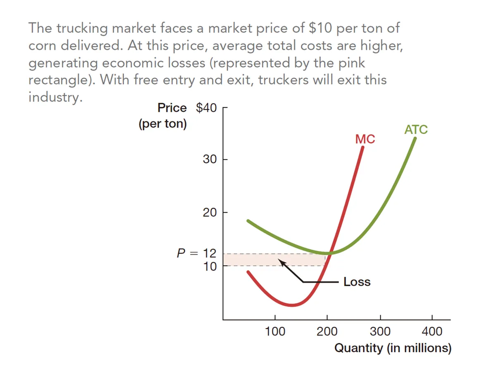
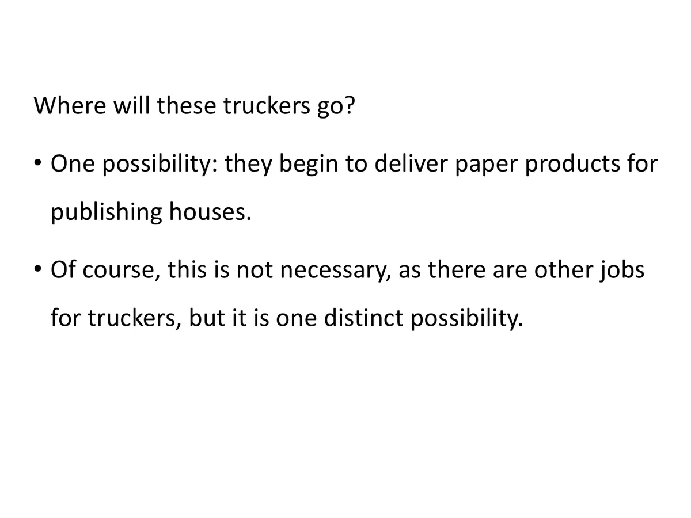
他们去哪？
一种可能：改行去给出版社送纸制品——就是第 39 页那个正在赚钱的市场。
课件特意补了一句：这不是必然的，卡车司机还有别的活可干，但这确实是一条具体的通道。
经济学只需要方向对，不需要指定每一个人去哪。资源会流向回报更高的地方，具体走哪条路，由当事人自己找。这也解释了为什么产业升级往往不是计划出来的，而是被亏损赶出来、被利润吸进去的。
幻灯片原文 / 板书
Where will these truckers go? One possibility: they begin to deliver paper products for publishing houses. Of course, this is not necessary, as there are other jobs for truckers, but it is one distinct possibility.
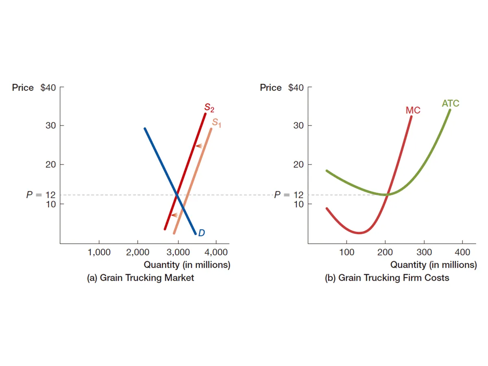
退出把价格抬起来。
随着车队陆续退出玉米运输，市场供给左移，价格从 $10 慢慢往上爬，亏损矩形随之缩小。
价格一路升到 ATC 的最低点 $12 才停。此时留下的司机刚好不赚不亏，谁也没有理由再走。
这张图和第 41 页是同一条逻辑的两个方向：一个行业的价格被「进入」压下来，被「退出」抬上去，两个方向都指向 ATC 的最低点。
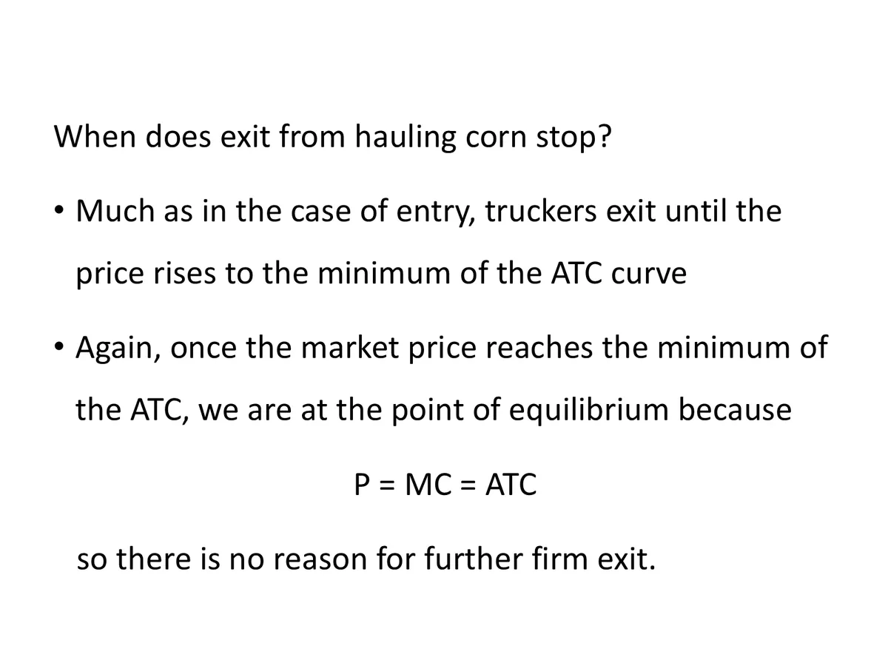
退出什么时候停？
和进入完全对称：卡车司机一直退，直到价格升到 ATC 曲线的最低点。
到了那里，市场又满足
P = MC = ATC
于是经济利润为零，没有进一步退出的理由。
所以均衡点只有一个，进入和退出只是从左右两侧走向它。这也解释了为什么长期里各行业的利润率会趋同——不是因为谁规定了，而是因为资源会走。考题常用问法：给定 P 与 ATC 最低点的关系，判断进入还是退出、价格往哪边走。
幻灯片原文 / 板书
When does exit from hauling corn stop? Much as in the case of entry, truckers exit until the price rises to the minimum of the ATC curve Again, once the market price reaches the minimum of the ATC, we are at the point of equilibrium because P = MC = ATC so there is no reason for further firm exit.
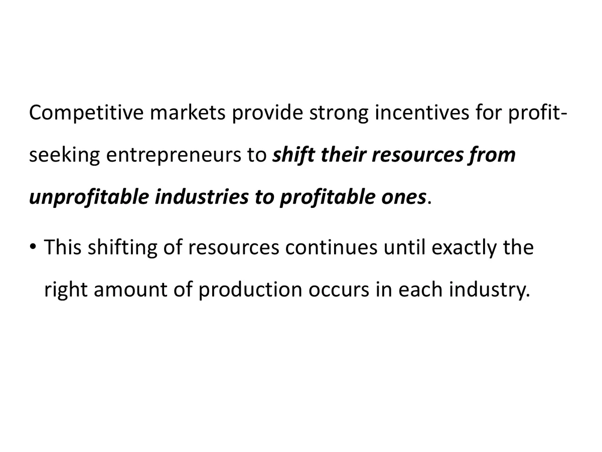
竞争市场提供的是激励，不是命令。
竞争性市场给逐利的企业家一个很强的激励：把资源从不赚钱的行业挪到赚钱的行业。
这种挪动会一直持续，直到每个行业的生产量恰好是对的。没有谁在计算总量，也没有谁在分配任务——每个人只看自己面前的价格和成本。
这就是看不见的手超出「个人交易」和「工厂经理」两个场景的地方：它管的不只是买卖，还有整个经济的生产结构。
幻灯片原文 / 板书
Competitive markets provide strong incentives for profit-seeking entrepreneurs to shift their resources from unprofitable industries to profitable ones. This shifting of resources continues until exactly the right amount of production occurs in each industry.
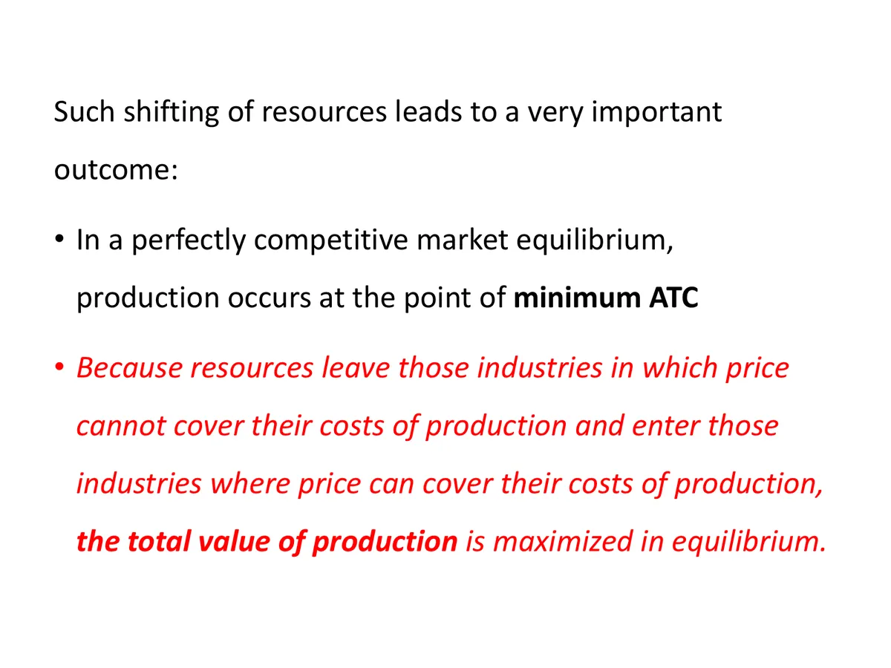
一个很重要的结论。
在完全竞争市场的均衡里：
- 生产发生在 ATC 的最低点；
- 因为资源会离开「价格盖不住成本」的行业，进入「价格盖得住成本」的行业；
- 所以均衡时全社会的生产总价值最大。
「最低 ATC」这个说法要读准：它不是「成本最低的企业胜出」，而是「每个行业都扩张到再扩就要亏的那一点」。
前者是优胜劣汰，后者是规模恰到好处。两者不是一回事。
幻灯片原文 / 板书
Such shifting of resources leads to a very important outcome: In a perfectly competitive market equilibrium, production occurs at the point of minimum ATC Because resources leave those industries in which price cannot cover their costs of production and enter those industries where price can cover their costs of production, the total value of production is maximized in equilibrium.
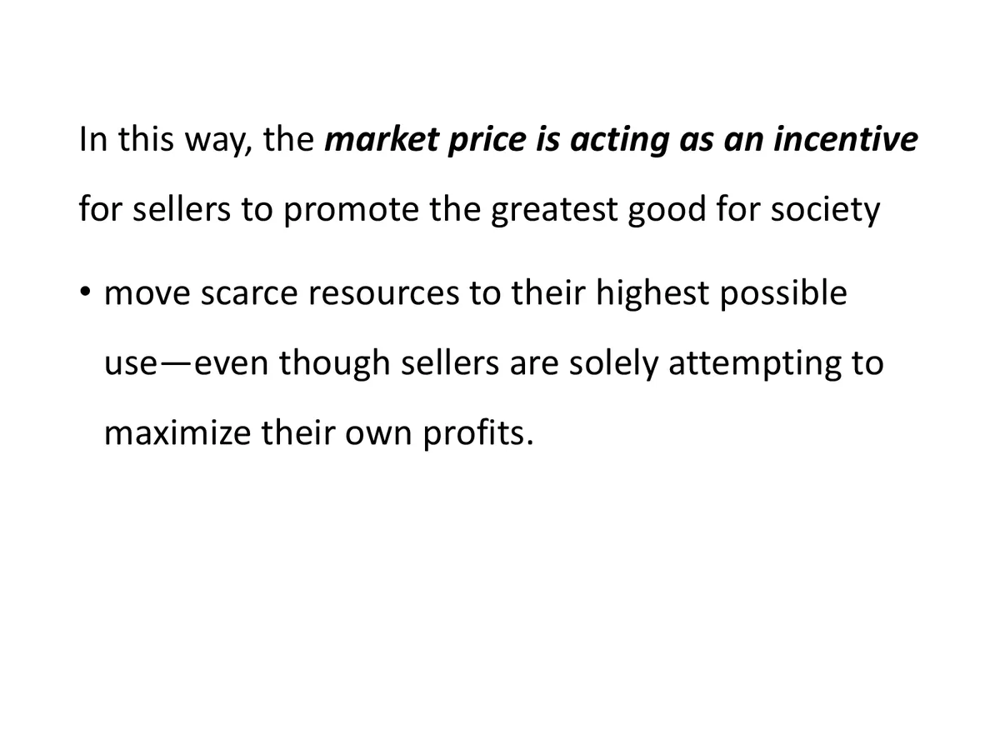
价格在这里扮演双重角色。
对卖方，市场价格是一个激励：价格高于成本就多生产，低于成本就退出——哪怕他只想最大化自己的利润。
对社会，同一个价格起到了引导作用：把稀缺资源推到最高价值的用途上。
这句话是本讲的收尾句：卖方一无所知，结果却对社会最好。
不是因为市场里的人都是好人，而是因为价格把「社会需要什么」压缩成了一个数字，让自私的人也能做出对社会有利的事。
幻灯片原文 / 板书
In this way, the market price is acting as an incentive for sellers to promote the greatest good for society move scarce resources to their highest possible use—even though sellers are solely attempting to maximize their own profits.
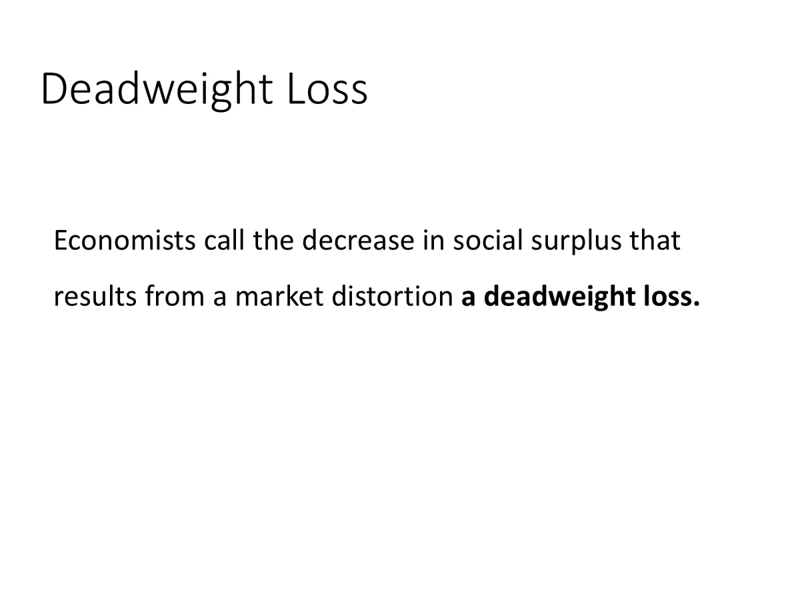
无谓损失（deadweight loss）。
定义：由于市场扭曲（market distortion）导致的社会总剩余的减少，经济学家称为无谓损失。
注意定义里的三个要素：有一个扭曲（限价、配额、税收、垄断都算）；总剩余减少了；减少的量就是无谓损失。
它和「转移」要分清：转移是钱从你口袋到我口袋，总剩余不变；无谓损失是凭空蒸发，谁也没拿到。这是税收一章反复要用的区分。
幻灯片原文 / 板书
Deadweight Loss --- Economists call the decrease in social surplus that results from a market distortion a deadweight loss.
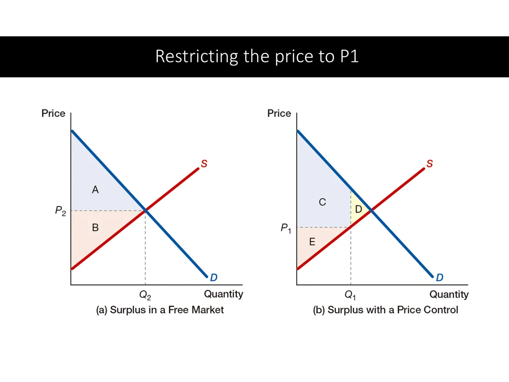
限价的图形分解。
- (a) 自由市场：均衡价格 P_2、数量 Q_2。消费者剩余是 A，生产者剩余是 B，总剩余 A+B。
- (b) 政府把价格压到 P_1<P_2：成交量由供给决定，掉到 Q_1。消费者剩余变成 C，生产者剩余变成 E，中间那块 D 谁也没拿到。
D 就是无谓损失：本来在 Q_1 到 Q_2 之间还有一批「买方愿付高于卖方成本」的交易，被价格管制挡掉了。
注意 (b) 里 C 比 A 大——消费者确实占了便宜；但 E 比 B 小得多，D 又白白蒸发，净结果是亏。
幻灯片原文 / 板书
Restricting the price to P1
怎么评价这个结果？
课件说得很平实：把价格人为压低，政府帮了消费者（C 可能大于 A），但伤了生产者（E 小于 B），而总体上剩余少了（D 蒸发）。
至于这个取舍你能不能接受，那是规范经济学（normative economics）的问题，不是实证经济学能替你回答的。
效率告诉你代价有多大，不告诉你值不值得付。这两件事分开，是本讲最后一个要点。
幻灯片原文 / 板书
Deadweight Loss --- By keeping the price artificially low, the government helps consumers but hurts producers overall, there is lost in surplus Whether you are comfortable with this trade-off is a question for normative economics.
指令经济（the Command Economy）。
要体会看不见的手干的活有多难，最好的办法是看那些试图替它干活的国家。
课件举的例子是朝鲜半岛：同一个民族、同一段历史、几乎同一起点，被一条线分成两种经济制度。
结果是本讲最刺眼的一组对比数据——先看曲线，再看表格，最后看一张不需要解释的照片。三者是同一件事的三种画法：时间序列、横截面、卫星图。
幻灯片原文 / 板书
The Command Economy --- To understand the difficulty of what the invisible hand accomplishes, it is instructive to consider cases where countries have attempted to place strong controls on the economy, in effect trying to do the job of the invisible hand. One example of the dramatic differences that can result is the case of Korea.
人均 GDP 的分岔（1950–2007）。
纵轴是人均 GDP（1990 年美元），横轴是年份。1950 年两条线几乎重合在 700–800 美元左右——那时两边都是穷农业国。
此后：韩国一路向上，到 2007 年前后接近 20,000 美元；朝鲜停在 1,000–2,000 美元，1990 年代后期还往下掉了一截。
同起点、同文化、同资源禀赋，唯一的大差别是制度。
这是「看不见的手」最有力的一组证据，也是本讲从理论转向现实的地方。
2008 年的横截面数据。
| 指标 | 韩国 | 朝鲜 |
|---|---|---|
| 2008 年 GDP | 13,440 亿美元 | 400 亿美元 |
| 2008 年 GDP 排名 | 第 13 位 | 第 95 位 |
| 2008 年出口额 | 3,551 亿美元 | 20.62 亿美元 |
| 2008 年进口额 | 3,134 亿美元 | 35.74 亿美元 |
| 工业占 GDP | 39.5% | 43.1% |
| 服务业占 GDP | 57.6% | 33.6% |
| 农业占 GDP | 3% | 23.3% |
怎么读：GDP 差 33 倍，出口差 170 倍。
更要紧的是结构——朝鲜农业占 23.3%、服务业只占 33.6%，是一个还没完成工业化和城市化的经济体；韩国服务业 57.6%，是典型的发达经济。工业占比两边接近，说明差别不在「有没有工业」，而在效率。
一张不需要解释的照片。
朝鲜半岛的夜间卫星图。南边灯火连成一片，北边几乎全黑，只在平壤有一个小亮点；中国东北和日本列岛也亮着。
灯光不是 GDP，但它是经济活动密度最直观的代理变量（proxy）：电、工厂、城市、物流，全在光里。
这条明暗分界线，就是第 57 页那条 GDP 曲线在地图上的样子。经济学有时不需要复杂模型，一张照片就够了。
中央计划者（The Central Planner）。
问题：为什么指令经济难以有效运转、难以有持续显著的 GDP 增长？
课件让你换个位置想：假设你就是那个社会计划者，你要做的事有哪些？
这一问不是修辞，是一张任务清单——你要替整个经济回答「生产什么、生产多少、给谁生产」这三个问题，而且不是回答一次，是每天、每件商品都要回答。清单越长，越能看出问题不在「想不想计划」，而在「能不能知道」。
幻灯片原文 / 板书
The Central Planner --- Why is it difficult for command economies to operate effectively and experience significant, sustained GDP growth? Imagine yourself in the position of a social planner, what do you need to do?
清单上的具体问题。
- 温州那些布匹生产商，有没有拿到必需的纺织原料、染桶和所有相关机器？
- 吉利该生产多少辆车？比亚迪该生产多少辆？
- 马云每天该允许多少卖家在淘宝开店？
- 京东方生产的屏幕，该给联想的 PC 用，还是给华为的手机用？
注意这些问题的共同点：答案不写在任何一份文件里，它散落在几千万个互不相识的人的偏好、技术和库存中。
计划者不是不聪明，是这些信息根本没被集中过。
幻灯片原文 / 板书
How can you make sure that the cloth producers in Wenzhou had the necessary textile, buckets and all the other relevant machines to produce the cloth? How many cars should Geely produce? How many cars should BYD produce? How many sellers should 马云 allow to open online shops in Taobao every day? Should the screens made by 京东方 be used in the production in Lenovo PCs or be used in Huawei phones?
计划者的表情。
一个人双手抱头、抓狂的漫画。这就是第 60 页那张任务清单的真实反应。
不是他不够努力，也不是他不够聪明——而是这些问题的答案在物理上无法集中。这张图放在「计划者」与「两个困难」之间，位置本身就是论证：先让你体会处境，再给病因。
下一页把这种困难拆成两条，因为它们的病因不同。
两个困难。
这两条要分开记，因为药方不同：协调问题缺的是信息，激励问题缺的是利益。换成提问的方式更清楚：协调问「谁知道该生产什么、生产多少」，激励问「谁知道该不该努力、努力了归谁」。
而市场很妙：它用同一个工具——价格——同时治了这两条。记一个对照：价格传递信息（治协调），价格决定收入（治激励）。同一根杠杆，两个作用点。
幻灯片原文 / 板书
Two difficulties --- 1. Coordination problem 2. Incentive problem
两条困难的定义。
- 协调问题：中央计划者并不完全了解消费者的欲望和需求，也不完全了解经济中每个部门的生产能力。他不知道该生产什么、能生产多少。
- 激励问题：如果不使用价格，就很难激励劳动者。干多干少一个样，谁还愿意多干？
课件补充的那句更狠：任何个人只知道集体知识的一小部分，所以复制看不见的手的工作是不可能的。这不是能力问题，是知识的存在方式问题。
幻灯片原文 / 板书
Coordination problem: Central planner does not fully understand consumer wants and needs and the production capabilities of every sector of the economy Incentive problem: it is difficult to incentivize workers if prices are not utilized.
哈耶克（Friedrich Hayek）的著名段落：
令人惊叹的是，在某种原材料短缺的情形下，没有任何命令下达，除了一小撮人之外没有人知道原因，而数以万计、花几个月调查也查不清身份的人，却都开始更节省地使用这种材料或其制品——也就是说，他们朝正确的方向移动了。
这段话解释的是价格的信息功能：价格把「稀缺」压缩成一个数字，所有人不用知道原因，只需要对这个数字做出反应。
哈耶克称之为知识的分立（the division of knowledge）——知识从不以整体形式存在，只以碎片形式分散在每个人手里。
幻灯片原文 / 板书
Friedrich Hayek’s --- “The marvel is that in a case like that of a scarcity of one raw material, without an order being issued, without more than perhaps a handful of people knowing the cause, tens of thousands of people whose identity could not be ascertained by months of investigation are made to use the material or its products more sparingly; that is, they move in the right direction.”
最后一段：公平与效率（Equity and Efficiency）。
到这里我们已经证明：竞争性均衡让总剩余最大，因而是帕累托有效的。
但「总剩余最大」只是衡量一个经济的一种标准。这一节要问另一个问题：这个饼是怎么分的？
分得难看，饼再大也可能让人无法接受。这一节没有公式，但它决定了你如何看待前面所有的结论。注意它的位置：放在全讲最后，恰恰因为它质疑的正是前面辛苦证明的那个标准。
幻灯片原文 / 板书
Equity and Efficiency
两种评价标准。
课件提醒：把「社会总剩余最大」当作衡量经济进步的标准，只是其中一种做法。
另一种考虑是饼怎么分配（how the pie is allocated）。
前者问「有没有浪费」，后者问「谁吃到了」。这两个问题不能互相替代，也不总是同向。
一个社会可以在效率上拿满分、在公平上不及格；也可以反过来。经济学的难处就在这张二维表里。
幻灯片原文 / 板书
It is important to recognize that the standard of maximizing social surplus is just one way to measure the progress of an economy. Another consideration is how the pie is allocated.
一个常见的价值判断。
很多公民认为，每个人都应该能够获得适当的食物、住房和基本医疗。
把这种想法再推一步：一个社会计划者可能还会关心公平（equity）。
注意这里的性质：这是价值判断，不是实证命题。你可以不同意，但不能说它「算错了」——它压根不是算出来的。
经济学能告诉你「要公平会牺牲多少效率」，但不能告诉你「值不值得」。
幻灯片原文 / 板书
For example, many citizens might believe that every person should have proper access to food, housing, and basic healthcare. Pushing this notion even further, a social planner might also be concerned with equity.
公平的定义。
公平关心的是饼如何在各个经济主体之间分配（how the pie is allocated to the various economic agents）。
对一些人来说，公平意味着商品在社会中平均分配。
这里要小心一个区分：公平（equity）不等于平均（equality）。平均是其中一种公平观，但不是唯一的——按贡献分配、按需要分配、按程序公平，都是。
争论往往不在「要不要公平」，而在「哪一种公平」。这也是政策讨论里经常各说各话的原因：大家在用同一个词，指的却是不同的分配规则。
幻灯片原文 / 板书
Equity is concerned with how the pie is allocated to the various economic agents. To some, equity means an even distribution of goods across society.
具体到人。
- 街角的流浪汉，和失业的工人，该先帮谁？
- 非洲那些快饿死的孩子呢？
他们几乎没有收入，这意味着他们被几乎每一个市场排除在外：支付意愿不够高，买不到多少东西。事实上，按市场价格，他们连最基本的必需品都买不起。
这句话很冷酷，但它是价格机制的直接推论——不是有人故意把他们赶出去，而是「出价」这个入场券他们拿不到。
幻灯片原文 / 板书
Should we help the homeless man on the corner, or assist an unemployed worker? What about starving children in Africa? They have virtually no income, implying that they are excluded from almost every market, because their willingness to pay is not high enough to buy many goods. In fact, they cannot afford even the most basic necessities at the market price.
效率不等于公道。
竞争性市场均衡使社会总剩余最大、是帕累托有效的，但这不意味着由此得到的分配在道德上令人满意。
这两句话必须同时成立：市场确实没浪费（效率），市场也确实可能分得很难看（公平）。
把两者混为一谈，是这一讲最容易犯的错。前者可以用图证明，后者只能靠价值判断。第 1 讲说过，实证问题回答「是什么」，规范问题回答「应该怎样」，这里正是那条分界线。
幻灯片原文 / 板书
Just because the competitive market equilibrium maximizes social surplus, and is efficient, does not mean that the resulting distribution is morally satisfactory.
帕累托效率的另一个含义。
公平与效率的问题属于规范经济学，是政策制定者和经济学家长期争论的领域。
在完全竞争均衡里，帕累托效率成立——这意味着：不可能在不使别人变差的情况下，让那个挨饿的非洲孩子变好。所以要改善他的处境，可能必须从其他人那里拿走几百美元。
这句话的力度在于：它没说「不该帮」，只说「帮是有代价的」。代价的大小，是可以算的。
幻灯片原文 / 板书
Several important questions arise concerning equity and efficiency. These are questions in the domain of normative economics, and they are often debated by policymakers and economists. In a perfectly competitive equilibrium, we know that Pareto efficiency holds. This means that it is not possible to make a starving African child better off without making someone else worse off. Thus, it is possible that in order to increase the well-being of a starving child, it will be necessary to take a few hundred dollars from other people.
收尾：取舍是常态。
这种财富再分配对现代社会当然重要。但我们会看到，这类干预带来一个重要的效率与公平之间的取舍（trade-off），而社会一直在两者之间做选择。
这也是税收的主要用途之一——它既是再分配的工具，本身又制造扭曲（还记得第 54 页那块 D 吗）。
怎么权衡，是后面几讲的主题。这一讲留给你的问题不是「市场好不好」，而是「市场好在哪、不好在哪」。
幻灯片原文 / 板书
Of course, such redistribution of wealth is important to modern societies We will find that this kind of intervention presents an important trade-off between efficiency and equity, and that as a society we continually have choices over efficiency and equity. This is one major purpose of taxation, which we will learn later.